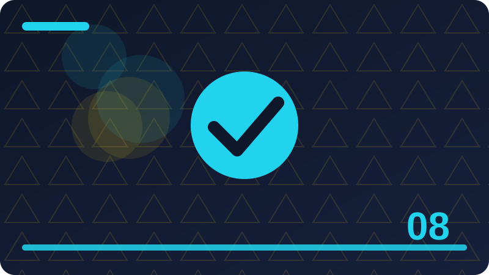

Chapter 8: Overfitting, Underfitting and Honest Testing

Section 1: Memorising Is Not Learning
This section is about memorising is not learning, and it belongs in this chapter because it helps you understand how a small program learns from examples and makes guesses you can check. Imagine you are teaching a friend to do memorising is not learning by showing examples only, with no extra hints, and notice how quickly your friend needs clear rules and honest feedback. A concrete toy case for memorising is not learning could use a short list you write yourself, such as a few labelled items or a few numbers, so every step stays visible and easy to repeat. Think of memorising is not learning as a habit your program learns from examples, rather than a magic trick, because every prediction it makes comes from patterns it has already seen in data you gave it.
A good way to picture memorising is not learning is to imagine sorting objects on a table by hand, noticing what you look at, what you ignore, and how you change your mind when a new object does not fit neatly. Beginners often rush past memorising is not learning, but taking time here pays off later, since almost every confusing result in a small project can be traced back to this one idea being unclear. When you work with memorising is not learning on your own machine, you stay in control, because you choose the examples, you can inspect every result, and nothing leaves your computer or costs money. The key question behind memorising is not learning is simple to ask, even when the answer takes practice, and that question is what pattern, if any, is really present in the examples in front of you.
People sometimes describe memorising is not learning with impressive words, yet the plain meaning stays the same, which is that a program looks at past examples and uses them to make a reasonable guess about a new case. To learn memorising is not learning well, try saying it back in your own words before you touch any code, because if you cannot explain it to a friend, the code will only hide the confusion for a while. A toy example makes memorising is not learning concrete, so imagine only a handful of examples, small enough to check by hand, and ask what a sensible person would guess before asking what a program should guess. One common mistake with memorising is not learning is to expect perfection, but real data is messy, people disagree about labels, and a useful model is often one that is right most of the time, not every time.
Another common mistake is to judge memorising is not learning from a single example, because one lucky or unlucky case tells you almost nothing, while a group of checked examples tells you a great deal. When you test memorising is not learning, keep your checking examples separate from your learning examples whenever you can, so your score measures learning rather than memory of answers already seen.
# Tiny local toy example for memorising is not learning
examples = [("example one", 1), ("example two", 0), ("example three", 1)]
for name, label in examples:
print(name, "->", label)
print("Count:", len(examples))Check: In your own words, what does memorising is not learning mean, and what is one small example that shows it?
Section 2: A Student Who Only Memorises Answers
This section is about a student who only memorises answers, and it belongs in this chapter because it helps you understand how a small program learns from examples and makes guesses you can check. Imagine you are teaching a friend to do a student who only memorises answers by showing examples only, with no extra hints, and notice how quickly your friend needs clear rules and honest feedback. A concrete toy case for a student who only memorises answers could use a short list you write yourself, such as a few labelled items or a few numbers, so every step stays visible and easy to repeat. A good way to picture a student who only memorises answers is to imagine sorting objects on a table by hand, noticing what you look at, what you ignore, and how you change your mind when a new object does not fit neatly.
Beginners often rush past a student who only memorises answers, but taking time here pays off later, since almost every confusing result in a small project can be traced back to this one idea being unclear. When you work with a student who only memorises answers on your own machine, you stay in control, because you choose the examples, you can inspect every result, and nothing leaves your computer or costs money. The key question behind a student who only memorises answers is simple to ask, even when the answer takes practice, and that question is what pattern, if any, is really present in the examples in front of you. People sometimes describe a student who only memorises answers with impressive words, yet the plain meaning stays the same, which is that a program looks at past examples and uses them to make a reasonable guess about a new case.
To learn a student who only memorises answers well, try saying it back in your own words before you touch any code, because if you cannot explain it to a friend, the code will only hide the confusion for a while. A toy example makes a student who only memorises answers concrete, so imagine only a handful of examples, small enough to check by hand, and ask what a sensible person would guess before asking what a program should guess. One common mistake with a student who only memorises answers is to expect perfection, but real data is messy, people disagree about labels, and a useful model is often one that is right most of the time, not every time. Another common mistake is to judge a student who only memorises answers from a single example, because one lucky or unlucky case tells you almost nothing, while a group of checked examples tells you a great deal.
When you test a student who only memorises answers, keep your checking examples separate from your learning examples whenever you can, so your score measures learning rather than memory of answers already seen.
# Tiny local toy example for a student who only memorises answers
examples = [("example one", 1), ("example two", 0), ("example three", 1)]
for name, label in examples:
print(name, "->", label)
print("Count:", len(examples))Check: In your own words, what does a student who only memorises answers mean, and what is one small example that shows it?
Section 3: Underfitting: Too Simple to Learn
This section is about underfitting: too simple to learn, and it belongs in this chapter because it helps you understand how a small program learns from examples and makes guesses you can check. Imagine you are teaching a friend to do underfitting: too simple to learn by showing examples only, with no extra hints, and notice how quickly your friend needs clear rules and honest feedback. A concrete toy case for underfitting: too simple to learn could use a short list you write yourself, such as a few labelled items or a few numbers, so every step stays visible and easy to repeat. Beginners often rush past underfitting: too simple to learn, but taking time here pays off later, since almost every confusing result in a small project can be traced back to this one idea being unclear.
When you work with underfitting: too simple to learn on your own machine, you stay in control, because you choose the examples, you can inspect every result, and nothing leaves your computer or costs money. The key question behind underfitting: too simple to learn is simple to ask, even when the answer takes practice, and that question is what pattern, if any, is really present in the examples in front of you. People sometimes describe underfitting: too simple to learn with impressive words, yet the plain meaning stays the same, which is that a program looks at past examples and uses them to make a reasonable guess about a new case. To learn underfitting: too simple to learn well, try saying it back in your own words before you touch any code, because if you cannot explain it to a friend, the code will only hide the confusion for a while.
A toy example makes underfitting: too simple to learn concrete, so imagine only a handful of examples, small enough to check by hand, and ask what a sensible person would guess before asking what a program should guess. One common mistake with underfitting: too simple to learn is to expect perfection, but real data is messy, people disagree about labels, and a useful model is often one that is right most of the time, not every time. Another common mistake is to judge underfitting: too simple to learn from a single example, because one lucky or unlucky case tells you almost nothing, while a group of checked examples tells you a great deal. When you test underfitting: too simple to learn, keep your checking examples separate from your learning examples whenever you can, so your score measures learning rather than memory of answers already seen.
The code in this section is deliberately tiny and uses only the Python standard library, which means you can run it, change one number, run it again, and watch exactly what changes. Reading code about underfitting: too simple to learn is useful, but changing it is better, so after you run the example, try a different input, a strange input, and an input that should confuse the program, then note what happens.
# Tiny local toy example for underfitting: too simple to learn
examples = [("example one", 1), ("example two", 0), ("example three", 1)]
for name, label in examples:
print(name, "->", label)
print("Count:", len(examples))Check: In your own words, what does underfitting: too simple to learn mean, and what is one small example that shows it?
Section 4: Overfitting: Too Clever for Its Own Good
This section is about overfitting: too clever for its own good, and it belongs in this chapter because it helps you understand how a small program learns from examples and makes guesses you can check. Imagine you are teaching a friend to do overfitting: too clever for its own good by showing examples only, with no extra hints, and notice how quickly your friend needs clear rules and honest feedback. A concrete toy case for overfitting: too clever for its own good could use a short list you write yourself, such as a few labelled items or a few numbers, so every step stays visible and easy to repeat. When you work with overfitting: too clever for its own good on your own machine, you stay in control, because you choose the examples, you can inspect every result, and nothing leaves your computer or costs money.
The key question behind overfitting: too clever for its own good is simple to ask, even when the answer takes practice, and that question is what pattern, if any, is really present in the examples in front of you. People sometimes describe overfitting: too clever for its own good with impressive words, yet the plain meaning stays the same, which is that a program looks at past examples and uses them to make a reasonable guess about a new case. To learn overfitting: too clever for its own good well, try saying it back in your own words before you touch any code, because if you cannot explain it to a friend, the code will only hide the confusion for a while. A toy example makes overfitting: too clever for its own good concrete, so imagine only a handful of examples, small enough to check by hand, and ask what a sensible person would guess before asking what a program should guess.
One common mistake with overfitting: too clever for its own good is to expect perfection, but real data is messy, people disagree about labels, and a useful model is often one that is right most of the time, not every time. Another common mistake is to judge overfitting: too clever for its own good from a single example, because one lucky or unlucky case tells you almost nothing, while a group of checked examples tells you a great deal. When you test overfitting: too clever for its own good, keep your checking examples separate from your learning examples whenever you can, so your score measures learning rather than memory of answers already seen. The code in this section is deliberately tiny and uses only the Python standard library, which means you can run it, change one number, run it again, and watch exactly what changes.
Reading code about overfitting: too clever for its own good is useful, but changing it is better, so after you run the example, try a different input, a strange input, and an input that should confuse the program, then note what happens.
# Tiny local toy example for overfitting: too clever for its own good
examples = [("example one", 1), ("example two", 0), ("example three", 1)]
for name, label in examples:
print(name, "->", label)
print("Count:", len(examples))Check: In your own words, what does overfitting: too clever for its own good mean, and what is one small example that shows it?
Section 5: The Sweet Spot in the Middle
This section is about the sweet spot in the middle, and it belongs in this chapter because it helps you understand how a small program learns from examples and makes guesses you can check. Imagine you are teaching a friend to do the sweet spot in the middle by showing examples only, with no extra hints, and notice how quickly your friend needs clear rules and honest feedback. A concrete toy case for the sweet spot in the middle could use a short list you write yourself, such as a few labelled items or a few numbers, so every step stays visible and easy to repeat. The key question behind the sweet spot in the middle is simple to ask, even when the answer takes practice, and that question is what pattern, if any, is really present in the examples in front of you.
People sometimes describe the sweet spot in the middle with impressive words, yet the plain meaning stays the same, which is that a program looks at past examples and uses them to make a reasonable guess about a new case. To learn the sweet spot in the middle well, try saying it back in your own words before you touch any code, because if you cannot explain it to a friend, the code will only hide the confusion for a while. A toy example makes the sweet spot in the middle concrete, so imagine only a handful of examples, small enough to check by hand, and ask what a sensible person would guess before asking what a program should guess.
One common mistake with the sweet spot in the middle is to expect perfection, but real data is messy, people disagree about labels, and a useful model is often one that is right most of the time, not every time. Another common mistake is to judge the sweet spot in the middle from a single example, because one lucky or unlucky case tells you almost nothing, while a group of checked examples tells you a great deal. When you test the sweet spot in the middle, keep your checking examples separate from your learning examples whenever you can, so your score measures learning rather than memory of answers already seen. The code in this section is deliberately tiny and uses only the Python standard library, which means you can run it, change one number, run it again, and watch exactly what changes.
Reading code about the sweet spot in the middle is useful, but changing it is better, so after you run the example, try a different input, a strange input, and an input that should confuse the program, then note what happens. If a result surprises you while you explore the sweet spot in the middle, treat that surprise as information, not failure, because surprising results usually point to a hidden assumption in your examples or your rules.
# Tiny local toy example for the sweet spot in the middle
examples = [("example one", 1), ("example two", 0), ("example three", 1)]
for name, label in examples:
print(name, "->", label)
print("Count:", len(examples))Check: In your own words, what does the sweet spot in the middle mean, and what is one small example that shows it?
Section 6: Why More Complexity Is Not Always Better
This section is about why more complexity is not always better, and it belongs in this chapter because it helps you understand how a small program learns from examples and makes guesses you can check. Imagine you are teaching a friend to do why more complexity is not always better by showing examples only, with no extra hints, and notice how quickly your friend needs clear rules and honest feedback. A concrete toy case for why more complexity is not always better could use a short list you write yourself, such as a few labelled items or a few numbers, so every step stays visible and easy to repeat. People sometimes describe why more complexity is not always better with impressive words, yet the plain meaning stays the same, which is that a program looks at past examples and uses them to make a reasonable guess about a new case.
To learn why more complexity is not always better well, try saying it back in your own words before you touch any code, because if you cannot explain it to a friend, the code will only hide the confusion for a while. A toy example makes why more complexity is not always better concrete, so imagine only a handful of examples, small enough to check by hand, and ask what a sensible person would guess before asking what a program should guess. One common mistake with why more complexity is not always better is to expect perfection, but real data is messy, people disagree about labels, and a useful model is often one that is right most of the time, not every time.
Another common mistake is to judge why more complexity is not always better from a single example, because one lucky or unlucky case tells you almost nothing, while a group of checked examples tells you a great deal. When you test why more complexity is not always better, keep your checking examples separate from your learning examples whenever you can, so your score measures learning rather than memory of answers already seen. The code in this section is deliberately tiny and uses only the Python standard library, which means you can run it, change one number, run it again, and watch exactly what changes. Reading code about why more complexity is not always better is useful, but changing it is better, so after you run the example, try a different input, a strange input, and an input that should confuse the program, then note what happens.
If a result surprises you while you explore why more complexity is not always better, treat that surprise as information, not failure, because surprising results usually point to a hidden assumption in your examples or your rules. A calm habit for why more complexity is not always better is to write down what you expected before you run anything, then compare that expectation with the actual result, and then explain any difference in one plain sentence.
# Tiny local toy example for why more complexity is not always better
examples = [("example one", 1), ("example two", 0), ("example three", 1)]
for name, label in examples:
print(name, "->", label)
print("Count:", len(examples))Check: In your own words, what does why more complexity is not always better mean, and what is one small example that shows it?
Section 7: Training Error Falls, Test Error Rises
This section is about training error falls, test error rises, and it belongs in this chapter because it helps you understand how a small program learns from examples and makes guesses you can check. Imagine you are teaching a friend to do training error falls, test error rises by showing examples only, with no extra hints, and notice how quickly your friend needs clear rules and honest feedback. A concrete toy case for training error falls, test error rises could use a short list you write yourself, such as a few labelled items or a few numbers, so every step stays visible and easy to repeat. To learn training error falls, test error rises well, try saying it back in your own words before you touch any code, because if you cannot explain it to a friend, the code will only hide the confusion for a while.
A toy example makes training error falls, test error rises concrete, so imagine only a handful of examples, small enough to check by hand, and ask what a sensible person would guess before asking what a program should guess. One common mistake with training error falls, test error rises is to expect perfection, but real data is messy, people disagree about labels, and a useful model is often one that is right most of the time, not every time. Another common mistake is to judge training error falls, test error rises from a single example, because one lucky or unlucky case tells you almost nothing, while a group of checked examples tells you a great deal. When you test training error falls, test error rises, keep your checking examples separate from your learning examples whenever you can, so your score measures learning rather than memory of answers already seen.
The code in this section is deliberately tiny and uses only the Python standard library, which means you can run it, change one number, run it again, and watch exactly what changes. Reading code about training error falls, test error rises is useful, but changing it is better, so after you run the example, try a different input, a strange input, and an input that should confuse the program, then note what happens. If a result surprises you while you explore training error falls, test error rises, treat that surprise as information, not failure, because surprising results usually point to a hidden assumption in your examples or your rules. A calm habit for training error falls, test error rises is to write down what you expected before you run anything, then compare that expectation with the actual result, and then explain any difference in one plain sentence.
Many learners find training error falls, test error rises easier when they draw it first, so sketch the groups, the numbers, or the split on paper, even roughly, before you try to describe the same idea in code.
# Tiny local toy example for training error falls, test error rises
examples = [("example one", 1), ("example two", 0), ("example three", 1)]
for name, label in examples:
print(name, "->", label)
print("Count:", len(examples))Check: In your own words, what does training error falls, test error rises mean, and what is one small example that shows it?
Section 8: The U-Shaped Test Error Curve
This section is about the u-shaped test error curve, and it belongs in this chapter because it helps you understand how a small program learns from examples and makes guesses you can check. Imagine you are teaching a friend to do the u-shaped test error curve by showing examples only, with no extra hints, and notice how quickly your friend needs clear rules and honest feedback. A concrete toy case for the u-shaped test error curve could use a short list you write yourself, such as a few labelled items or a few numbers, so every step stays visible and easy to repeat. A toy example makes the u-shaped test error curve concrete, so imagine only a handful of examples, small enough to check by hand, and ask what a sensible person would guess before asking what a program should guess.
One common mistake with the u-shaped test error curve is to expect perfection, but real data is messy, people disagree about labels, and a useful model is often one that is right most of the time, not every time. Another common mistake is to judge the u-shaped test error curve from a single example, because one lucky or unlucky case tells you almost nothing, while a group of checked examples tells you a great deal. When you test the u-shaped test error curve, keep your checking examples separate from your learning examples whenever you can, so your score measures learning rather than memory of answers already seen. The code in this section is deliberately tiny and uses only the Python standard library, which means you can run it, change one number, run it again, and watch exactly what changes.
Reading code about the u-shaped test error curve is useful, but changing it is better, so after you run the example, try a different input, a strange input, and an input that should confuse the program, then note what happens. If a result surprises you while you explore the u-shaped test error curve, treat that surprise as information, not failure, because surprising results usually point to a hidden assumption in your examples or your rules. A calm habit for the u-shaped test error curve is to write down what you expected before you run anything, then compare that expectation with the actual result, and then explain any difference in one plain sentence. Many learners find the u-shaped test error curve easier when they draw it first, so sketch the groups, the numbers, or the split on paper, even roughly, before you try to describe the same idea in code.
Notice how the u-shaped test error curve connects to the previous section, because learning builds in layers, and each new idea either sharpens an old rule, adds a check, or warns you about a trap you might otherwise miss. You do not need a large data set to understand the u-shaped test error curve, and in fact a small set you fully understand teaches more than a huge set you never inspect, since you can trace every decision by hand.
# Tiny local toy example for the u-shaped test error curve
examples = [("example one", 1), ("example two", 0), ("example three", 1)]
for name, label in examples:
print(name, "->", label)
print("Count:", len(examples))Check: In your own words, what does the u-shaped test error curve mean, and what is one small example that shows it?
Section 9: Noise: Randomness You Cannot Learn
This section is about noise: randomness you cannot learn, and it belongs in this chapter because it helps you understand how a small program learns from examples and makes guesses you can check. Imagine you are teaching a friend to do noise: randomness you cannot learn by showing examples only, with no extra hints, and notice how quickly your friend needs clear rules and honest feedback. A concrete toy case for noise: randomness you cannot learn could use a short list you write yourself, such as a few labelled items or a few numbers, so every step stays visible and easy to repeat. One common mistake with noise: randomness you cannot learn is to expect perfection, but real data is messy, people disagree about labels, and a useful model is often one that is right most of the time, not every time.
Another common mistake is to judge noise: randomness you cannot learn from a single example, because one lucky or unlucky case tells you almost nothing, while a group of checked examples tells you a great deal. When you test noise: randomness you cannot learn, keep your checking examples separate from your learning examples whenever you can, so your score measures learning rather than memory of answers already seen. The code in this section is deliberately tiny and uses only the Python standard library, which means you can run it, change one number, run it again, and watch exactly what changes. Reading code about noise: randomness you cannot learn is useful, but changing it is better, so after you run the example, try a different input, a strange input, and an input that should confuse the program, then note what happens.
If a result surprises you while you explore noise: randomness you cannot learn, treat that surprise as information, not failure, because surprising results usually point to a hidden assumption in your examples or your rules. A calm habit for noise: randomness you cannot learn is to write down what you expected before you run anything, then compare that expectation with the actual result, and then explain any difference in one plain sentence. Many learners find noise: randomness you cannot learn easier when they draw it first, so sketch the groups, the numbers, or the split on paper, even roughly, before you try to describe the same idea in code. Notice how noise: randomness you cannot learn connects to the previous section, because learning builds in layers, and each new idea either sharpens an old rule, adds a check, or warns you about a trap you might otherwise miss.
You do not need a large data set to understand noise: randomness you cannot learn, and in fact a small set you fully understand teaches more than a huge set you never inspect, since you can trace every decision by hand. When you explain noise: randomness you cannot learn to someone else, use their world first, such as cooking, sport, school, or shopping, and only afterwards translate that everyday picture back into the language of data and models.
# Tiny local toy example for noise: randomness you cannot learn
examples = [("example one", 1), ("example two", 0), ("example three", 1)]
for name, label in examples:
print(name, "->", label)
print("Count:", len(examples))Check: In your own words, what does noise: randomness you cannot learn mean, and what is one small example that shows it?
Section 10: Signal: The Pattern Worth Learning
This section is about signal: the pattern worth learning, and it belongs in this chapter because it helps you understand how a small program learns from examples and makes guesses you can check. Imagine you are teaching a friend to do signal: the pattern worth learning by showing examples only, with no extra hints, and notice how quickly your friend needs clear rules and honest feedback. A concrete toy case for signal: the pattern worth learning could use a short list you write yourself, such as a few labelled items or a few numbers, so every step stays visible and easy to repeat. Another common mistake is to judge signal: the pattern worth learning from a single example, because one lucky or unlucky case tells you almost nothing, while a group of checked examples tells you a great deal.
When you test signal: the pattern worth learning, keep your checking examples separate from your learning examples whenever you can, so your score measures learning rather than memory of answers already seen. The code in this section is deliberately tiny and uses only the Python standard library, which means you can run it, change one number, run it again, and watch exactly what changes. Reading code about signal: the pattern worth learning is useful, but changing it is better, so after you run the example, try a different input, a strange input, and an input that should confuse the program, then note what happens. If a result surprises you while you explore signal: the pattern worth learning, treat that surprise as information, not failure, because surprising results usually point to a hidden assumption in your examples or your rules.
A calm habit for signal: the pattern worth learning is to write down what you expected before you run anything, then compare that expectation with the actual result, and then explain any difference in one plain sentence. Many learners find signal: the pattern worth learning easier when they draw it first, so sketch the groups, the numbers, or the split on paper, even roughly, before you try to describe the same idea in code. Notice how signal: the pattern worth learning connects to the previous section, because learning builds in layers, and each new idea either sharpens an old rule, adds a check, or warns you about a trap you might otherwise miss. You do not need a large data set to understand signal: the pattern worth learning, and in fact a small set you fully understand teaches more than a huge set you never inspect, since you can trace every decision by hand.
When you explain signal: the pattern worth learning to someone else, use their world first, such as cooking, sport, school, or shopping, and only afterwards translate that everyday picture back into the language of data and models. A useful test for signal: the pattern worth learning is to ask what would happen if the data changed slightly, because a solid idea stays sensible under small changes, while a fragile idea falls apart at the first surprise.
# Tiny local toy example for signal: the pattern worth learning
examples = [("example one", 1), ("example two", 0), ("example three", 1)]
for name, label in examples:
print(name, "->", label)
print("Count:", len(examples))Check: In your own words, what does signal: the pattern worth learning mean, and what is one small example that shows it?
Section 11: Memorising Noise by Accident
This section is about memorising noise by accident, and it belongs in this chapter because it helps you understand how a small program learns from examples and makes guesses you can check. Imagine you are teaching a friend to do memorising noise by accident by showing examples only, with no extra hints, and notice how quickly your friend needs clear rules and honest feedback. A concrete toy case for memorising noise by accident could use a short list you write yourself, such as a few labelled items or a few numbers, so every step stays visible and easy to repeat. When you test memorising noise by accident, keep your checking examples separate from your learning examples whenever you can, so your score measures learning rather than memory of answers already seen.
The code in this section is deliberately tiny and uses only the Python standard library, which means you can run it, change one number, run it again, and watch exactly what changes. Reading code about memorising noise by accident is useful, but changing it is better, so after you run the example, try a different input, a strange input, and an input that should confuse the program, then note what happens. If a result surprises you while you explore memorising noise by accident, treat that surprise as information, not failure, because surprising results usually point to a hidden assumption in your examples or your rules. A calm habit for memorising noise by accident is to write down what you expected before you run anything, then compare that expectation with the actual result, and then explain any difference in one plain sentence.
Many learners find memorising noise by accident easier when they draw it first, so sketch the groups, the numbers, or the split on paper, even roughly, before you try to describe the same idea in code. Notice how memorising noise by accident connects to the previous section, because learning builds in layers, and each new idea either sharpens an old rule, adds a check, or warns you about a trap you might otherwise miss. You do not need a large data set to understand memorising noise by accident, and in fact a small set you fully understand teaches more than a huge set you never inspect, since you can trace every decision by hand. When you explain memorising noise by accident to someone else, use their world first, such as cooking, sport, school, or shopping, and only afterwards translate that everyday picture back into the language of data and models.
A useful test for memorising noise by accident is to ask what would happen if the data changed slightly, because a solid idea stays sensible under small changes, while a fragile idea falls apart at the first surprise. Keep your notes about memorising noise by accident short and practical, recording the definition in one sentence, one example that worked, one example that failed, and one question you still want to answer.
# Tiny local toy example for memorising noise by accident
examples = [("example one", 1), ("example two", 0), ("example three", 1)]
for name, label in examples:
print(name, "->", label)
print("Count:", len(examples))Check: In your own words, what does memorising noise by accident mean, and what is one small example that shows it?
Section 12: Too Many Rules for Too Few Examples
This section is about too many rules for too few examples, and it belongs in this chapter because it helps you understand how a small program learns from examples and makes guesses you can check. Imagine you are teaching a friend to do too many rules for too few examples by showing examples only, with no extra hints, and notice how quickly your friend needs clear rules and honest feedback. A concrete toy case for too many rules for too few examples could use a short list you write yourself, such as a few labelled items or a few numbers, so every step stays visible and easy to repeat. The code in this section is deliberately tiny and uses only the Python standard library, which means you can run it, change one number, run it again, and watch exactly what changes.
Reading code about too many rules for too few examples is useful, but changing it is better, so after you run the example, try a different input, a strange input, and an input that should confuse the program, then note what happens. If a result surprises you while you explore too many rules for too few examples, treat that surprise as information, not failure, because surprising results usually point to a hidden assumption in your examples or your rules. A calm habit for too many rules for too few examples is to write down what you expected before you run anything, then compare that expectation with the actual result, and then explain any difference in one plain sentence. Many learners find too many rules for too few examples easier when they draw it first, so sketch the groups, the numbers, or the split on paper, even roughly, before you try to describe the same idea in code.
Notice how too many rules for too few examples connects to the previous section, because learning builds in layers, and each new idea either sharpens an old rule, adds a check, or warns you about a trap you might otherwise miss. You do not need a large data set to understand too many rules for too few examples, and in fact a small set you fully understand teaches more than a huge set you never inspect, since you can trace every decision by hand. When you explain too many rules for too few examples to someone else, use their world first, such as cooking, sport, school, or shopping, and only afterwards translate that everyday picture back into the language of data and models. A useful test for too many rules for too few examples is to ask what would happen if the data changed slightly, because a solid idea stays sensible under small changes, while a fragile idea falls apart at the first surprise.
Keep your notes about too many rules for too few examples short and practical, recording the definition in one sentence, one example that worked, one example that failed, and one question you still want to answer.
# Tiny local toy example for too many rules for too few examples
examples = [("example one", 1), ("example two", 0), ("example three", 1)]
for name, label in examples:
print(name, "->", label)
print("Count:", len(examples))Check: In your own words, what does too many rules for too few examples mean, and what is one small example that shows it?
Section 13: Small Data Makes Overfitting Easier
This section is about small data makes overfitting easier, and it belongs in this chapter because it helps you understand how a small program learns from examples and makes guesses you can check. Imagine you are teaching a friend to do small data makes overfitting easier by showing examples only, with no extra hints, and notice how quickly your friend needs clear rules and honest feedback. A concrete toy case for small data makes overfitting easier could use a short list you write yourself, such as a few labelled items or a few numbers, so every step stays visible and easy to repeat. Reading code about small data makes overfitting easier is useful, but changing it is better, so after you run the example, try a different input, a strange input, and an input that should confuse the program, then note what happens.
If a result surprises you while you explore small data makes overfitting easier, treat that surprise as information, not failure, because surprising results usually point to a hidden assumption in your examples or your rules. A calm habit for small data makes overfitting easier is to write down what you expected before you run anything, then compare that expectation with the actual result, and then explain any difference in one plain sentence. Many learners find small data makes overfitting easier easier when they draw it first, so sketch the groups, the numbers, or the split on paper, even roughly, before you try to describe the same idea in code. Notice how small data makes overfitting easier connects to the previous section, because learning builds in layers, and each new idea either sharpens an old rule, adds a check, or warns you about a trap you might otherwise miss.
You do not need a large data set to understand small data makes overfitting easier, and in fact a small set you fully understand teaches more than a huge set you never inspect, since you can trace every decision by hand. When you explain small data makes overfitting easier to someone else, use their world first, such as cooking, sport, school, or shopping, and only afterwards translate that everyday picture back into the language of data and models. A useful test for small data makes overfitting easier is to ask what would happen if the data changed slightly, because a solid idea stays sensible under small changes, while a fragile idea falls apart at the first surprise. Keep your notes about small data makes overfitting easier short and practical, recording the definition in one sentence, one example that worked, one example that failed, and one question you still want to answer.
The difference between knowing about small data makes overfitting easier and being able to use it is practice, so the small exercises at the end of this section matter more than reading the same explanation a second time.
# Tiny local toy example for small data makes overfitting easier
examples = [("example one", 1), ("example two", 0), ("example three", 1)]
for name, label in examples:
print(name, "->", label)
print("Count:", len(examples))Check: In your own words, what does small data makes overfitting easier mean, and what is one small example that shows it?
Section 14: Big Data Helps but Does Not Cure All
This section is about big data helps but does not cure all, and it belongs in this chapter because it helps you understand how a small program learns from examples and makes guesses you can check. Imagine you are teaching a friend to do big data helps but does not cure all by showing examples only, with no extra hints, and notice how quickly your friend needs clear rules and honest feedback. A concrete toy case for big data helps but does not cure all could use a short list you write yourself, such as a few labelled items or a few numbers, so every step stays visible and easy to repeat. If a result surprises you while you explore big data helps but does not cure all, treat that surprise as information, not failure, because surprising results usually point to a hidden assumption in your examples or your rules.
A calm habit for big data helps but does not cure all is to write down what you expected before you run anything, then compare that expectation with the actual result, and then explain any difference in one plain sentence. Many learners find big data helps but does not cure all easier when they draw it first, so sketch the groups, the numbers, or the split on paper, even roughly, before you try to describe the same idea in code. Notice how big data helps but does not cure all connects to the previous section, because learning builds in layers, and each new idea either sharpens an old rule, adds a check, or warns you about a trap you might otherwise miss. You do not need a large data set to understand big data helps but does not cure all, and in fact a small set you fully understand teaches more than a huge set you never inspect, since you can trace every decision by hand.
When you explain big data helps but does not cure all to someone else, use their world first, such as cooking, sport, school, or shopping, and only afterwards translate that everyday picture back into the language of data and models. A useful test for big data helps but does not cure all is to ask what would happen if the data changed slightly, because a solid idea stays sensible under small changes, while a fragile idea falls apart at the first surprise. Keep your notes about big data helps but does not cure all short and practical, recording the definition in one sentence, one example that worked, one example that failed, and one question you still want to answer. The difference between knowing about big data helps but does not cure all and being able to use it is practice, so the small exercises at the end of this section matter more than reading the same explanation a second time.
If you feel stuck on big data helps but does not cure all, shrink the problem until it feels easy again, using fewer examples, fewer inputs, or a simpler rule, and then grow it back step by step until the difficulty returns.
# Tiny local toy example for big data helps but does not cure all
examples = [("example one", 1), ("example two", 0), ("example three", 1)]
for name, label in examples:
print(name, "->", label)
print("Count:", len(examples))Check: In your own words, what does big data helps but does not cure all mean, and what is one small example that shows it?
Section 15: Simple Models as a First Defence
This section is about simple models as a first defence, and it belongs in this chapter because it helps you understand how a small program learns from examples and makes guesses you can check. Imagine you are teaching a friend to do simple models as a first defence by showing examples only, with no extra hints, and notice how quickly your friend needs clear rules and honest feedback. A concrete toy case for simple models as a first defence could use a short list you write yourself, such as a few labelled items or a few numbers, so every step stays visible and easy to repeat. A calm habit for simple models as a first defence is to write down what you expected before you run anything, then compare that expectation with the actual result, and then explain any difference in one plain sentence.
Many learners find simple models as a first defence easier when they draw it first, so sketch the groups, the numbers, or the split on paper, even roughly, before you try to describe the same idea in code. Notice how simple models as a first defence connects to the previous section, because learning builds in layers, and each new idea either sharpens an old rule, adds a check, or warns you about a trap you might otherwise miss. You do not need a large data set to understand simple models as a first defence, and in fact a small set you fully understand teaches more than a huge set you never inspect, since you can trace every decision by hand. When you explain simple models as a first defence to someone else, use their world first, such as cooking, sport, school, or shopping, and only afterwards translate that everyday picture back into the language of data and models.
A useful test for simple models as a first defence is to ask what would happen if the data changed slightly, because a solid idea stays sensible under small changes, while a fragile idea falls apart at the first surprise. Keep your notes about simple models as a first defence short and practical, recording the definition in one sentence, one example that worked, one example that failed, and one question you still want to answer. The difference between knowing about simple models as a first defence and being able to use it is practice, so the small exercises at the end of this section matter more than reading the same explanation a second time. If you feel stuck on simple models as a first defence, shrink the problem until it feels easy again, using fewer examples, fewer inputs, or a simpler rule, and then grow it back step by step until the difficulty returns.
A program that handles simple models as a first defence well is usually boring in a good way, because it behaves predictably, it fails in ways you can explain, and it does not pretend to know more than its examples support.
# Tiny local toy example for simple models as a first defence
examples = [("example one", 1), ("example two", 0), ("example three", 1)]
for name, label in examples:
print(name, "->", label)
print("Count:", len(examples))Check: In your own words, what does simple models as a first defence mean, and what is one small example that shows it?
Section 16: Regularisation in Plain Words
This section is about regularisation in plain words, and it belongs in this chapter because it helps you understand how a small program learns from examples and makes guesses you can check. Imagine you are teaching a friend to do regularisation in plain words by showing examples only, with no extra hints, and notice how quickly your friend needs clear rules and honest feedback. A concrete toy case for regularisation in plain words could use a short list you write yourself, such as a few labelled items or a few numbers, so every step stays visible and easy to repeat. Many learners find regularisation in plain words easier when they draw it first, so sketch the groups, the numbers, or the split on paper, even roughly, before you try to describe the same idea in code.
Notice how regularisation in plain words connects to the previous section, because learning builds in layers, and each new idea either sharpens an old rule, adds a check, or warns you about a trap you might otherwise miss. You do not need a large data set to understand regularisation in plain words, and in fact a small set you fully understand teaches more than a huge set you never inspect, since you can trace every decision by hand. When you explain regularisation in plain words to someone else, use their world first, such as cooking, sport, school, or shopping, and only afterwards translate that everyday picture back into the language of data and models. A useful test for regularisation in plain words is to ask what would happen if the data changed slightly, because a solid idea stays sensible under small changes, while a fragile idea falls apart at the first surprise.
Keep your notes about regularisation in plain words short and practical, recording the definition in one sentence, one example that worked, one example that failed, and one question you still want to answer. The difference between knowing about regularisation in plain words and being able to use it is practice, so the small exercises at the end of this section matter more than reading the same explanation a second time. If you feel stuck on regularisation in plain words, shrink the problem until it feels easy again, using fewer examples, fewer inputs, or a simpler rule, and then grow it back step by step until the difficulty returns. A program that handles regularisation in plain words well is usually boring in a good way, because it behaves predictably, it fails in ways you can explain, and it does not pretend to know more than its examples support.
Remember that regularisation in plain words is a tool for helping people decide, not a replacement for judgement, so a sensible builder always leaves room for a person to check, correct, or overrule the result. Before you move on from regularisation in plain words, check that you can name one situation where it helps, one situation where it misleads, and one simple check you would run before trusting its output.
# Tiny local toy example for regularisation in plain words
examples = [("example one", 1), ("example two", 0), ("example three", 1)]
for name, label in examples:
print(name, "->", label)
print("Count:", len(examples))Check: In your own words, what does regularisation in plain words mean, and what is one small example that shows it?
Section 17: Penalising Wild Guesses
This section is about penalising wild guesses, and it belongs in this chapter because it helps you understand how a small program learns from examples and makes guesses you can check. Imagine you are teaching a friend to do penalising wild guesses by showing examples only, with no extra hints, and notice how quickly your friend needs clear rules and honest feedback. A concrete toy case for penalising wild guesses could use a short list you write yourself, such as a few labelled items or a few numbers, so every step stays visible and easy to repeat. Notice how penalising wild guesses connects to the previous section, because learning builds in layers, and each new idea either sharpens an old rule, adds a check, or warns you about a trap you might otherwise miss.
You do not need a large data set to understand penalising wild guesses, and in fact a small set you fully understand teaches more than a huge set you never inspect, since you can trace every decision by hand. When you explain penalising wild guesses to someone else, use their world first, such as cooking, sport, school, or shopping, and only afterwards translate that everyday picture back into the language of data and models. A useful test for penalising wild guesses is to ask what would happen if the data changed slightly, because a solid idea stays sensible under small changes, while a fragile idea falls apart at the first surprise. Keep your notes about penalising wild guesses short and practical, recording the definition in one sentence, one example that worked, one example that failed, and one question you still want to answer.
The difference between knowing about penalising wild guesses and being able to use it is practice, so the small exercises at the end of this section matter more than reading the same explanation a second time. If you feel stuck on penalising wild guesses, shrink the problem until it feels easy again, using fewer examples, fewer inputs, or a simpler rule, and then grow it back step by step until the difficulty returns. A program that handles penalising wild guesses well is usually boring in a good way, because it behaves predictably, it fails in ways you can explain, and it does not pretend to know more than its examples support. Remember that penalising wild guesses is a tool for helping people decide, not a replacement for judgement, so a sensible builder always leaves room for a person to check, correct, or overrule the result.
Before you move on from penalising wild guesses, check that you can name one situation where it helps, one situation where it misleads, and one simple check you would run before trusting its output. The examples in this section use invented toy data on purpose, so you can focus on the idea itself without worrying about private information, licences, or the cost of a real service.
# Tiny local toy example for penalising wild guesses
examples = [("example one", 1), ("example two", 0), ("example three", 1)]
for name, label in examples:
print(name, "->", label)
print("Count:", len(examples))Check: In your own words, what does penalising wild guesses mean, and what is one small example that shows it?
Section 18: Pruning a Tree That Grew Too Far
This section is about pruning a tree that grew too far, and it belongs in this chapter because it helps you understand how a small program learns from examples and makes guesses you can check. Imagine you are teaching a friend to do pruning a tree that grew too far by showing examples only, with no extra hints, and notice how quickly your friend needs clear rules and honest feedback. A concrete toy case for pruning a tree that grew too far could use a short list you write yourself, such as a few labelled items or a few numbers, so every step stays visible and easy to repeat. You do not need a large data set to understand pruning a tree that grew too far, and in fact a small set you fully understand teaches more than a huge set you never inspect, since you can trace every decision by hand.
When you explain pruning a tree that grew too far to someone else, use their world first, such as cooking, sport, school, or shopping, and only afterwards translate that everyday picture back into the language of data and models. A useful test for pruning a tree that grew too far is to ask what would happen if the data changed slightly, because a solid idea stays sensible under small changes, while a fragile idea falls apart at the first surprise. Keep your notes about pruning a tree that grew too far short and practical, recording the definition in one sentence, one example that worked, one example that failed, and one question you still want to answer. The difference between knowing about pruning a tree that grew too far and being able to use it is practice, so the small exercises at the end of this section matter more than reading the same explanation a second time.
If you feel stuck on pruning a tree that grew too far, shrink the problem until it feels easy again, using fewer examples, fewer inputs, or a simpler rule, and then grow it back step by step until the difficulty returns. A program that handles pruning a tree that grew too far well is usually boring in a good way, because it behaves predictably, it fails in ways you can explain, and it does not pretend to know more than its examples support. Remember that pruning a tree that grew too far is a tool for helping people decide, not a replacement for judgement, so a sensible builder always leaves room for a person to check, correct, or overrule the result. Before you move on from pruning a tree that grew too far, check that you can name one situation where it helps, one situation where it misleads, and one simple check you would run before trusting its output.
The examples in this section use invented toy data on purpose, so you can focus on the idea itself without worrying about private information, licences, or the cost of a real service.
# Tiny local toy example for pruning a tree that grew too far
examples = [("example one", 1), ("example two", 0), ("example three", 1)]
for name, label in examples:
print(name, "->", label)
print("Count:", len(examples))Check: In your own words, what does pruning a tree that grew too far mean, and what is one small example that shows it?
Section 19: Stopping Training Early
This section is about stopping training early, and it belongs in this chapter because it helps you understand how a small program learns from examples and makes guesses you can check. Imagine you are teaching a friend to do stopping training early by showing examples only, with no extra hints, and notice how quickly your friend needs clear rules and honest feedback. A concrete toy case for stopping training early could use a short list you write yourself, such as a few labelled items or a few numbers, so every step stays visible and easy to repeat. When you explain stopping training early to someone else, use their world first, such as cooking, sport, school, or shopping, and only afterwards translate that everyday picture back into the language of data and models.
A useful test for stopping training early is to ask what would happen if the data changed slightly, because a solid idea stays sensible under small changes, while a fragile idea falls apart at the first surprise. Keep your notes about stopping training early short and practical, recording the definition in one sentence, one example that worked, one example that failed, and one question you still want to answer. The difference between knowing about stopping training early and being able to use it is practice, so the small exercises at the end of this section matter more than reading the same explanation a second time. If you feel stuck on stopping training early, shrink the problem until it feels easy again, using fewer examples, fewer inputs, or a simpler rule, and then grow it back step by step until the difficulty returns.
A program that handles stopping training early well is usually boring in a good way, because it behaves predictably, it fails in ways you can explain, and it does not pretend to know more than its examples support. Remember that stopping training early is a tool for helping people decide, not a replacement for judgement, so a sensible builder always leaves room for a person to check, correct, or overrule the result. Before you move on from stopping training early, check that you can name one situation where it helps, one situation where it misleads, and one simple check you would run before trusting its output. The examples in this section use invented toy data on purpose, so you can focus on the idea itself without worrying about private information, licences, or the cost of a real service.
As you practise stopping training early, pay attention to the inputs more than the cleverness of the method, because clean, honest inputs usually matter more than a complicated technique applied to messy inputs. Finally, treat stopping training early as a building block, not a finished product, since later chapters will reuse it inside larger tools, where its strengths and its limits will both become clearer. In plain words, stopping training early is one small idea you can understand without any special background, and this section explains it slowly, with an everyday example first and a tiny local program second.
# Tiny local toy example for stopping training early
examples = [("example one", 1), ("example two", 0), ("example three", 1)]
for name, label in examples:
print(name, "->", label)
print("Count:", len(examples))Check: In your own words, what does stopping training early mean, and what is one small example that shows it?
Section 20: Cross-Checking with Different Splits
This section is about cross-checking with different splits, and it belongs in this chapter because it helps you understand how a small program learns from examples and makes guesses you can check. Imagine you are teaching a friend to do cross-checking with different splits by showing examples only, with no extra hints, and notice how quickly your friend needs clear rules and honest feedback. A concrete toy case for cross-checking with different splits could use a short list you write yourself, such as a few labelled items or a few numbers, so every step stays visible and easy to repeat. A useful test for cross-checking with different splits is to ask what would happen if the data changed slightly, because a solid idea stays sensible under small changes, while a fragile idea falls apart at the first surprise.
Keep your notes about cross-checking with different splits short and practical, recording the definition in one sentence, one example that worked, one example that failed, and one question you still want to answer. The difference between knowing about cross-checking with different splits and being able to use it is practice, so the small exercises at the end of this section matter more than reading the same explanation a second time. If you feel stuck on cross-checking with different splits, shrink the problem until it feels easy again, using fewer examples, fewer inputs, or a simpler rule, and then grow it back step by step until the difficulty returns. A program that handles cross-checking with different splits well is usually boring in a good way, because it behaves predictably, it fails in ways you can explain, and it does not pretend to know more than its examples support.
Remember that cross-checking with different splits is a tool for helping people decide, not a replacement for judgement, so a sensible builder always leaves room for a person to check, correct, or overrule the result. Before you move on from cross-checking with different splits, check that you can name one situation where it helps, one situation where it misleads, and one simple check you would run before trusting its output. The examples in this section use invented toy data on purpose, so you can focus on the idea itself without worrying about private information, licences, or the cost of a real service. As you practise cross-checking with different splits, pay attention to the inputs more than the cleverness of the method, because clean, honest inputs usually matter more than a complicated technique applied to messy inputs.
Finally, treat cross-checking with different splits as a building block, not a finished product, since later chapters will reuse it inside larger tools, where its strengths and its limits will both become clearer. In plain words, cross-checking with different splits is one small idea you can understand without any special background, and this section explains it slowly, with an everyday example first and a tiny local program second.
# Tiny local toy example for cross-checking with different splits
examples = [("example one", 1), ("example two", 0), ("example three", 1)]
for name, label in examples:
print(name, "->", label)
print("Count:", len(examples))Check: In your own words, what does cross-checking with different splits mean, and what is one small example that shows it?
Section 21: Why One Test Can Mislead You
This section is about why one test can mislead you, and it belongs in this chapter because it helps you understand how a small program learns from examples and makes guesses you can check. Imagine you are teaching a friend to do why one test can mislead you by showing examples only, with no extra hints, and notice how quickly your friend needs clear rules and honest feedback. A concrete toy case for why one test can mislead you could use a short list you write yourself, such as a few labelled items or a few numbers, so every step stays visible and easy to repeat. Keep your notes about why one test can mislead you short and practical, recording the definition in one sentence, one example that worked, one example that failed, and one question you still want to answer.
The difference between knowing about why one test can mislead you and being able to use it is practice, so the small exercises at the end of this section matter more than reading the same explanation a second time. If you feel stuck on why one test can mislead you, shrink the problem until it feels easy again, using fewer examples, fewer inputs, or a simpler rule, and then grow it back step by step until the difficulty returns. A program that handles why one test can mislead you well is usually boring in a good way, because it behaves predictably, it fails in ways you can explain, and it does not pretend to know more than its examples support. Remember that why one test can mislead you is a tool for helping people decide, not a replacement for judgement, so a sensible builder always leaves room for a person to check, correct, or overrule the result.
Before you move on from why one test can mislead you, check that you can name one situation where it helps, one situation where it misleads, and one simple check you would run before trusting its output. The examples in this section use invented toy data on purpose, so you can focus on the idea itself without worrying about private information, licences, or the cost of a real service. As you practise why one test can mislead you, pay attention to the inputs more than the cleverness of the method, because clean, honest inputs usually matter more than a complicated technique applied to messy inputs. Finally, treat why one test can mislead you as a building block, not a finished product, since later chapters will reuse it inside larger tools, where its strengths and its limits will both become clearer.
In plain words, why one test can mislead you is one small idea you can understand without any special background, and this section explains it slowly, with an everyday example first and a tiny local program second. Think of why one test can mislead you as a habit your program learns from examples, rather than a magic trick, because every prediction it makes comes from patterns it has already seen in data you gave it.
# Tiny local toy example for why one test can mislead you
examples = [("example one", 1), ("example two", 0), ("example three", 1)]
for name, label in examples:
print(name, "->", label)
print("Count:", len(examples))Check: In your own words, what does why one test can mislead you mean, and what is one small example that shows it?
Section 22: Honest Testing Means No Peeking
This section is about honest testing means no peeking, and it belongs in this chapter because it helps you understand how a small program learns from examples and makes guesses you can check. Imagine you are teaching a friend to do honest testing means no peeking by showing examples only, with no extra hints, and notice how quickly your friend needs clear rules and honest feedback. A concrete toy case for honest testing means no peeking could use a short list you write yourself, such as a few labelled items or a few numbers, so every step stays visible and easy to repeat. The difference between knowing about honest testing means no peeking and being able to use it is practice, so the small exercises at the end of this section matter more than reading the same explanation a second time.
If you feel stuck on honest testing means no peeking, shrink the problem until it feels easy again, using fewer examples, fewer inputs, or a simpler rule, and then grow it back step by step until the difficulty returns. A program that handles honest testing means no peeking well is usually boring in a good way, because it behaves predictably, it fails in ways you can explain, and it does not pretend to know more than its examples support. Remember that honest testing means no peeking is a tool for helping people decide, not a replacement for judgement, so a sensible builder always leaves room for a person to check, correct, or overrule the result. Before you move on from honest testing means no peeking, check that you can name one situation where it helps, one situation where it misleads, and one simple check you would run before trusting its output.
The examples in this section use invented toy data on purpose, so you can focus on the idea itself without worrying about private information, licences, or the cost of a real service. As you practise honest testing means no peeking, pay attention to the inputs more than the cleverness of the method, because clean, honest inputs usually matter more than a complicated technique applied to messy inputs. Finally, treat honest testing means no peeking as a building block, not a finished product, since later chapters will reuse it inside larger tools, where its strengths and its limits will both become clearer. In plain words, honest testing means no peeking is one small idea you can understand without any special background, and this section explains it slowly, with an everyday example first and a tiny local program second.
Think of honest testing means no peeking as a habit your program learns from examples, rather than a magic trick, because every prediction it makes comes from patterns it has already seen in data you gave it. A good way to picture honest testing means no peeking is to imagine sorting objects on a table by hand, noticing what you look at, what you ignore, and how you change your mind when a new object does not fit neatly.
# Tiny local toy example for honest testing means no peeking
examples = [("example one", 1), ("example two", 0), ("example three", 1)]
for name, label in examples:
print(name, "->", label)
print("Count:", len(examples))Check: In your own words, what does honest testing means no peeking mean, and what is one small example that shows it?
Section 23: Leaking Answers into Training
This section is about leaking answers into training, and it belongs in this chapter because it helps you understand how a small program learns from examples and makes guesses you can check. Imagine you are teaching a friend to do leaking answers into training by showing examples only, with no extra hints, and notice how quickly your friend needs clear rules and honest feedback. A concrete toy case for leaking answers into training could use a short list you write yourself, such as a few labelled items or a few numbers, so every step stays visible and easy to repeat. If you feel stuck on leaking answers into training, shrink the problem until it feels easy again, using fewer examples, fewer inputs, or a simpler rule, and then grow it back step by step until the difficulty returns.
A program that handles leaking answers into training well is usually boring in a good way, because it behaves predictably, it fails in ways you can explain, and it does not pretend to know more than its examples support. Remember that leaking answers into training is a tool for helping people decide, not a replacement for judgement, so a sensible builder always leaves room for a person to check, correct, or overrule the result. Before you move on from leaking answers into training, check that you can name one situation where it helps, one situation where it misleads, and one simple check you would run before trusting its output. The examples in this section use invented toy data on purpose, so you can focus on the idea itself without worrying about private information, licences, or the cost of a real service.
As you practise leaking answers into training, pay attention to the inputs more than the cleverness of the method, because clean, honest inputs usually matter more than a complicated technique applied to messy inputs. Finally, treat leaking answers into training as a building block, not a finished product, since later chapters will reuse it inside larger tools, where its strengths and its limits will both become clearer. In plain words, leaking answers into training is one small idea you can understand without any special background, and this section explains it slowly, with an everyday example first and a tiny local program second. Think of leaking answers into training as a habit your program learns from examples, rather than a magic trick, because every prediction it makes comes from patterns it has already seen in data you gave it.
A good way to picture leaking answers into training is to imagine sorting objects on a table by hand, noticing what you look at, what you ignore, and how you change your mind when a new object does not fit neatly. Beginners often rush past leaking answers into training, but taking time here pays off later, since almost every confusing result in a small project can be traced back to this one idea being unclear.
# Tiny local toy example for leaking answers into training
examples = [("example one", 1), ("example two", 0), ("example three", 1)]
for name, label in examples:
print(name, "->", label)
print("Count:", len(examples))Check: In your own words, what does leaking answers into training mean, and what is one small example that shows it?
Section 24: Leaking by Accident Through Scaling
This section is about leaking by accident through scaling, and it belongs in this chapter because it helps you understand how a small program learns from examples and makes guesses you can check. Imagine you are teaching a friend to do leaking by accident through scaling by showing examples only, with no extra hints, and notice how quickly your friend needs clear rules and honest feedback. A concrete toy case for leaking by accident through scaling could use a short list you write yourself, such as a few labelled items or a few numbers, so every step stays visible and easy to repeat. A program that handles leaking by accident through scaling well is usually boring in a good way, because it behaves predictably, it fails in ways you can explain, and it does not pretend to know more than its examples support.
Remember that leaking by accident through scaling is a tool for helping people decide, not a replacement for judgement, so a sensible builder always leaves room for a person to check, correct, or overrule the result. Before you move on from leaking by accident through scaling, check that you can name one situation where it helps, one situation where it misleads, and one simple check you would run before trusting its output. The examples in this section use invented toy data on purpose, so you can focus on the idea itself without worrying about private information, licences, or the cost of a real service. As you practise leaking by accident through scaling, pay attention to the inputs more than the cleverness of the method, because clean, honest inputs usually matter more than a complicated technique applied to messy inputs.
Finally, treat leaking by accident through scaling as a building block, not a finished product, since later chapters will reuse it inside larger tools, where its strengths and its limits will both become clearer. In plain words, leaking by accident through scaling is one small idea you can understand without any special background, and this section explains it slowly, with an everyday example first and a tiny local program second. Think of leaking by accident through scaling as a habit your program learns from examples, rather than a magic trick, because every prediction it makes comes from patterns it has already seen in data you gave it. A good way to picture leaking by accident through scaling is to imagine sorting objects on a table by hand, noticing what you look at, what you ignore, and how you change your mind when a new object does not fit neatly.
Beginners often rush past leaking by accident through scaling, but taking time here pays off later, since almost every confusing result in a small project can be traced back to this one idea being unclear. When you work with leaking by accident through scaling on your own machine, you stay in control, because you choose the examples, you can inspect every result, and nothing leaves your computer or costs money.
# Tiny local toy example for leaking by accident through scaling
examples = [("example one", 1), ("example two", 0), ("example three", 1)]
for name, label in examples:
print(name, "->", label)
print("Count:", len(examples))Check: In your own words, what does leaking by accident through scaling mean, and what is one small example that shows it?
Section 25: Leaking Through Duplicate Examples
This section is about leaking through duplicate examples, and it belongs in this chapter because it helps you understand how a small program learns from examples and makes guesses you can check. Imagine you are teaching a friend to do leaking through duplicate examples by showing examples only, with no extra hints, and notice how quickly your friend needs clear rules and honest feedback. A concrete toy case for leaking through duplicate examples could use a short list you write yourself, such as a few labelled items or a few numbers, so every step stays visible and easy to repeat. Remember that leaking through duplicate examples is a tool for helping people decide, not a replacement for judgement, so a sensible builder always leaves room for a person to check, correct, or overrule the result.
Before you move on from leaking through duplicate examples, check that you can name one situation where it helps, one situation where it misleads, and one simple check you would run before trusting its output. The examples in this section use invented toy data on purpose, so you can focus on the idea itself without worrying about private information, licences, or the cost of a real service. As you practise leaking through duplicate examples, pay attention to the inputs more than the cleverness of the method, because clean, honest inputs usually matter more than a complicated technique applied to messy inputs. Finally, treat leaking through duplicate examples as a building block, not a finished product, since later chapters will reuse it inside larger tools, where its strengths and its limits will both become clearer.
In plain words, leaking through duplicate examples is one small idea you can understand without any special background, and this section explains it slowly, with an everyday example first and a tiny local program second. Think of leaking through duplicate examples as a habit your program learns from examples, rather than a magic trick, because every prediction it makes comes from patterns it has already seen in data you gave it. A good way to picture leaking through duplicate examples is to imagine sorting objects on a table by hand, noticing what you look at, what you ignore, and how you change your mind when a new object does not fit neatly. Beginners often rush past leaking through duplicate examples, but taking time here pays off later, since almost every confusing result in a small project can be traced back to this one idea being unclear.
When you work with leaking through duplicate examples on your own machine, you stay in control, because you choose the examples, you can inspect every result, and nothing leaves your computer or costs money. The key question behind leaking through duplicate examples is simple to ask, even when the answer takes practice, and that question is what pattern, if any, is really present in the examples in front of you.
# Tiny local toy example for leaking through duplicate examples
examples = [("example one", 1), ("example two", 0), ("example three", 1)]
for name, label in examples:
print(name, "->", label)
print("Count:", len(examples))Check: In your own words, what does leaking through duplicate examples mean, and what is one small example that shows it?
Section 26: Choosing a Model Without Cheating
This section is about choosing a model without cheating, and it belongs in this chapter because it helps you understand how a small program learns from examples and makes guesses you can check. Imagine you are teaching a friend to do choosing a model without cheating by showing examples only, with no extra hints, and notice how quickly your friend needs clear rules and honest feedback. A concrete toy case for choosing a model without cheating could use a short list you write yourself, such as a few labelled items or a few numbers, so every step stays visible and easy to repeat. Before you move on from choosing a model without cheating, check that you can name one situation where it helps, one situation where it misleads, and one simple check you would run before trusting its output.
The examples in this section use invented toy data on purpose, so you can focus on the idea itself without worrying about private information, licences, or the cost of a real service. As you practise choosing a model without cheating, pay attention to the inputs more than the cleverness of the method, because clean, honest inputs usually matter more than a complicated technique applied to messy inputs. Finally, treat choosing a model without cheating as a building block, not a finished product, since later chapters will reuse it inside larger tools, where its strengths and its limits will both become clearer. In plain words, choosing a model without cheating is one small idea you can understand without any special background, and this section explains it slowly, with an everyday example first and a tiny local program second.
Think of choosing a model without cheating as a habit your program learns from examples, rather than a magic trick, because every prediction it makes comes from patterns it has already seen in data you gave it. A good way to picture choosing a model without cheating is to imagine sorting objects on a table by hand, noticing what you look at, what you ignore, and how you change your mind when a new object does not fit neatly. Beginners often rush past choosing a model without cheating, but taking time here pays off later, since almost every confusing result in a small project can be traced back to this one idea being unclear. When you work with choosing a model without cheating on your own machine, you stay in control, because you choose the examples, you can inspect every result, and nothing leaves your computer or costs money.
The key question behind choosing a model without cheating is simple to ask, even when the answer takes practice, and that question is what pattern, if any, is really present in the examples in front of you. People sometimes describe choosing a model without cheating with impressive words, yet the plain meaning stays the same, which is that a program looks at past examples and uses them to make a reasonable guess about a new case.
# Tiny local toy example for choosing a model without cheating
examples = [("example one", 1), ("example two", 0), ("example three", 1)]
for name, label in examples:
print(name, "->", label)
print("Count:", len(examples))Check: In your own words, what does choosing a model without cheating mean, and what is one small example that shows it?
Section 27: Tuning Is Learning Too
This section is about tuning is learning too, and it belongs in this chapter because it helps you understand how a small program learns from examples and makes guesses you can check. Imagine you are teaching a friend to do tuning is learning too by showing examples only, with no extra hints, and notice how quickly your friend needs clear rules and honest feedback. A concrete toy case for tuning is learning too could use a short list you write yourself, such as a few labelled items or a few numbers, so every step stays visible and easy to repeat. The examples in this section use invented toy data on purpose, so you can focus on the idea itself without worrying about private information, licences, or the cost of a real service.
As you practise tuning is learning too, pay attention to the inputs more than the cleverness of the method, because clean, honest inputs usually matter more than a complicated technique applied to messy inputs. Finally, treat tuning is learning too as a building block, not a finished product, since later chapters will reuse it inside larger tools, where its strengths and its limits will both become clearer. In plain words, tuning is learning too is one small idea you can understand without any special background, and this section explains it slowly, with an everyday example first and a tiny local program second. Think of tuning is learning too as a habit your program learns from examples, rather than a magic trick, because every prediction it makes comes from patterns it has already seen in data you gave it.
A good way to picture tuning is learning too is to imagine sorting objects on a table by hand, noticing what you look at, what you ignore, and how you change your mind when a new object does not fit neatly. Beginners often rush past tuning is learning too, but taking time here pays off later, since almost every confusing result in a small project can be traced back to this one idea being unclear. When you work with tuning is learning too on your own machine, you stay in control, because you choose the examples, you can inspect every result, and nothing leaves your computer or costs money. The key question behind tuning is learning too is simple to ask, even when the answer takes practice, and that question is what pattern, if any, is really present in the examples in front of you.
People sometimes describe tuning is learning too with impressive words, yet the plain meaning stays the same, which is that a program looks at past examples and uses them to make a reasonable guess about a new case. To learn tuning is learning too well, try saying it back in your own words before you touch any code, because if you cannot explain it to a friend, the code will only hide the confusion for a while.
# Tiny local toy example for tuning is learning too
examples = [("example one", 1), ("example two", 0), ("example three", 1)]
for name, label in examples:
print(name, "->", label)
print("Count:", len(examples))Check: In your own words, what does tuning is learning too mean, and what is one small example that shows it?
Section 28: Nested Checks for Honest Choices
This section is about nested checks for honest choices, and it belongs in this chapter because it helps you understand how a small program learns from examples and makes guesses you can check. Imagine you are teaching a friend to do nested checks for honest choices by showing examples only, with no extra hints, and notice how quickly your friend needs clear rules and honest feedback. A concrete toy case for nested checks for honest choices could use a short list you write yourself, such as a few labelled items or a few numbers, so every step stays visible and easy to repeat. As you practise nested checks for honest choices, pay attention to the inputs more than the cleverness of the method, because clean, honest inputs usually matter more than a complicated technique applied to messy inputs.
Finally, treat nested checks for honest choices as a building block, not a finished product, since later chapters will reuse it inside larger tools, where its strengths and its limits will both become clearer. In plain words, nested checks for honest choices is one small idea you can understand without any special background, and this section explains it slowly, with an everyday example first and a tiny local program second. Think of nested checks for honest choices as a habit your program learns from examples, rather than a magic trick, because every prediction it makes comes from patterns it has already seen in data you gave it. A good way to picture nested checks for honest choices is to imagine sorting objects on a table by hand, noticing what you look at, what you ignore, and how you change your mind when a new object does not fit neatly.
Beginners often rush past nested checks for honest choices, but taking time here pays off later, since almost every confusing result in a small project can be traced back to this one idea being unclear. When you work with nested checks for honest choices on your own machine, you stay in control, because you choose the examples, you can inspect every result, and nothing leaves your computer or costs money. The key question behind nested checks for honest choices is simple to ask, even when the answer takes practice, and that question is what pattern, if any, is really present in the examples in front of you. People sometimes describe nested checks for honest choices with impressive words, yet the plain meaning stays the same, which is that a program looks at past examples and uses them to make a reasonable guess about a new case.
To learn nested checks for honest choices well, try saying it back in your own words before you touch any code, because if you cannot explain it to a friend, the code will only hide the confusion for a while. A toy example makes nested checks for honest choices concrete, so imagine only a handful of examples, small enough to check by hand, and ask what a sensible person would guess before asking what a program should guess.
# Tiny local toy example for nested checks for honest choices
examples = [("example one", 1), ("example two", 0), ("example three", 1)]
for name, label in examples:
print(name, "->", label)
print("Count:", len(examples))Check: In your own words, what does nested checks for honest choices mean, and what is one small example that shows it?
Section 29: Comparing Models on the Same Test
This section is about comparing models on the same test, and it belongs in this chapter because it helps you understand how a small program learns from examples and makes guesses you can check. Imagine you are teaching a friend to do comparing models on the same test by showing examples only, with no extra hints, and notice how quickly your friend needs clear rules and honest feedback. A concrete toy case for comparing models on the same test could use a short list you write yourself, such as a few labelled items or a few numbers, so every step stays visible and easy to repeat. Finally, treat comparing models on the same test as a building block, not a finished product, since later chapters will reuse it inside larger tools, where its strengths and its limits will both become clearer.
In plain words, comparing models on the same test is one small idea you can understand without any special background, and this section explains it slowly, with an everyday example first and a tiny local program second. Think of comparing models on the same test as a habit your program learns from examples, rather than a magic trick, because every prediction it makes comes from patterns it has already seen in data you gave it. A good way to picture comparing models on the same test is to imagine sorting objects on a table by hand, noticing what you look at, what you ignore, and how you change your mind when a new object does not fit neatly. Beginners often rush past comparing models on the same test, but taking time here pays off later, since almost every confusing result in a small project can be traced back to this one idea being unclear.
When you work with comparing models on the same test on your own machine, you stay in control, because you choose the examples, you can inspect every result, and nothing leaves your computer or costs money. The key question behind comparing models on the same test is simple to ask, even when the answer takes practice, and that question is what pattern, if any, is really present in the examples in front of you. People sometimes describe comparing models on the same test with impressive words, yet the plain meaning stays the same, which is that a program looks at past examples and uses them to make a reasonable guess about a new case. To learn comparing models on the same test well, try saying it back in your own words before you touch any code, because if you cannot explain it to a friend, the code will only hide the confusion for a while.
A toy example makes comparing models on the same test concrete, so imagine only a handful of examples, small enough to check by hand, and ask what a sensible person would guess before asking what a program should guess.
# Tiny local toy example for comparing models on the same test
examples = [("example one", 1), ("example two", 0), ("example three", 1)]
for name, label in examples:
print(name, "->", label)
print("Count:", len(examples))Check: In your own words, what does comparing models on the same test mean, and what is one small example that shows it?
Section 30: Reporting the Bad Results Too
This section is about reporting the bad results too, and it belongs in this chapter because it helps you understand how a small program learns from examples and makes guesses you can check. Imagine you are teaching a friend to do reporting the bad results too by showing examples only, with no extra hints, and notice how quickly your friend needs clear rules and honest feedback. A concrete toy case for reporting the bad results too could use a short list you write yourself, such as a few labelled items or a few numbers, so every step stays visible and easy to repeat. In plain words, reporting the bad results too is one small idea you can understand without any special background, and this section explains it slowly, with an everyday example first and a tiny local program second.
Think of reporting the bad results too as a habit your program learns from examples, rather than a magic trick, because every prediction it makes comes from patterns it has already seen in data you gave it. A good way to picture reporting the bad results too is to imagine sorting objects on a table by hand, noticing what you look at, what you ignore, and how you change your mind when a new object does not fit neatly. Beginners often rush past reporting the bad results too, but taking time here pays off later, since almost every confusing result in a small project can be traced back to this one idea being unclear. When you work with reporting the bad results too on your own machine, you stay in control, because you choose the examples, you can inspect every result, and nothing leaves your computer or costs money.
The key question behind reporting the bad results too is simple to ask, even when the answer takes practice, and that question is what pattern, if any, is really present in the examples in front of you. People sometimes describe reporting the bad results too with impressive words, yet the plain meaning stays the same, which is that a program looks at past examples and uses them to make a reasonable guess about a new case. To learn reporting the bad results too well, try saying it back in your own words before you touch any code, because if you cannot explain it to a friend, the code will only hide the confusion for a while. A toy example makes reporting the bad results too concrete, so imagine only a handful of examples, small enough to check by hand, and ask what a sensible person would guess before asking what a program should guess.
One common mistake with reporting the bad results too is to expect perfection, but real data is messy, people disagree about labels, and a useful model is often one that is right most of the time, not every time.
# Tiny local toy example for reporting the bad results too
examples = [("example one", 1), ("example two", 0), ("example three", 1)]
for name, label in examples:
print(name, "->", label)
print("Count:", len(examples))Check: In your own words, what does reporting the bad results too mean, and what is one small example that shows it?
Section 31: When Test Scores Flatter You
This section is about when test scores flatter you, and it belongs in this chapter because it helps you understand how a small program learns from examples and makes guesses you can check. Imagine you are teaching a friend to do when test scores flatter you by showing examples only, with no extra hints, and notice how quickly your friend needs clear rules and honest feedback. A concrete toy case for when test scores flatter you could use a short list you write yourself, such as a few labelled items or a few numbers, so every step stays visible and easy to repeat. Think of when test scores flatter you as a habit your program learns from examples, rather than a magic trick, because every prediction it makes comes from patterns it has already seen in data you gave it.
A good way to picture when test scores flatter you is to imagine sorting objects on a table by hand, noticing what you look at, what you ignore, and how you change your mind when a new object does not fit neatly. Beginners often rush past when test scores flatter you, but taking time here pays off later, since almost every confusing result in a small project can be traced back to this one idea being unclear. When you work with when test scores flatter you on your own machine, you stay in control, because you choose the examples, you can inspect every result, and nothing leaves your computer or costs money. The key question behind when test scores flatter you is simple to ask, even when the answer takes practice, and that question is what pattern, if any, is really present in the examples in front of you.
People sometimes describe when test scores flatter you with impressive words, yet the plain meaning stays the same, which is that a program looks at past examples and uses them to make a reasonable guess about a new case. To learn when test scores flatter you well, try saying it back in your own words before you touch any code, because if you cannot explain it to a friend, the code will only hide the confusion for a while. A toy example makes when test scores flatter you concrete, so imagine only a handful of examples, small enough to check by hand, and ask what a sensible person would guess before asking what a program should guess. One common mistake with when test scores flatter you is to expect perfection, but real data is messy, people disagree about labels, and a useful model is often one that is right most of the time, not every time.
Another common mistake is to judge when test scores flatter you from a single example, because one lucky or unlucky case tells you almost nothing, while a group of checked examples tells you a great deal.
# Tiny local toy example for when test scores flatter you
examples = [("example one", 1), ("example two", 0), ("example three", 1)]
for name, label in examples:
print(name, "->", label)
print("Count:", len(examples))Check: In your own words, what does when test scores flatter you mean, and what is one small example that shows it?
Section 32: When Test Scores Scare You Unfairly
This section is about when test scores scare you unfairly, and it belongs in this chapter because it helps you understand how a small program learns from examples and makes guesses you can check. Imagine you are teaching a friend to do when test scores scare you unfairly by showing examples only, with no extra hints, and notice how quickly your friend needs clear rules and honest feedback. A concrete toy case for when test scores scare you unfairly could use a short list you write yourself, such as a few labelled items or a few numbers, so every step stays visible and easy to repeat. A good way to picture when test scores scare you unfairly is to imagine sorting objects on a table by hand, noticing what you look at, what you ignore, and how you change your mind when a new object does not fit neatly.
Beginners often rush past when test scores scare you unfairly, but taking time here pays off later, since almost every confusing result in a small project can be traced back to this one idea being unclear. When you work with when test scores scare you unfairly on your own machine, you stay in control, because you choose the examples, you can inspect every result, and nothing leaves your computer or costs money. The key question behind when test scores scare you unfairly is simple to ask, even when the answer takes practice, and that question is what pattern, if any, is really present in the examples in front of you. People sometimes describe when test scores scare you unfairly with impressive words, yet the plain meaning stays the same, which is that a program looks at past examples and uses them to make a reasonable guess about a new case.
To learn when test scores scare you unfairly well, try saying it back in your own words before you touch any code, because if you cannot explain it to a friend, the code will only hide the confusion for a while. A toy example makes when test scores scare you unfairly concrete, so imagine only a handful of examples, small enough to check by hand, and ask what a sensible person would guess before asking what a program should guess. One common mistake with when test scores scare you unfairly is to expect perfection, but real data is messy, people disagree about labels, and a useful model is often one that is right most of the time, not every time. Another common mistake is to judge when test scores scare you unfairly from a single example, because one lucky or unlucky case tells you almost nothing, while a group of checked examples tells you a great deal.
When you test when test scores scare you unfairly, keep your checking examples separate from your learning examples whenever you can, so your score measures learning rather than memory of answers already seen.
# Tiny local toy example for when test scores scare you unfairly
examples = [("example one", 1), ("example two", 0), ("example three", 1)]
for name, label in examples:
print(name, "->", label)
print("Count:", len(examples))Check: In your own words, what does when test scores scare you unfairly mean, and what is one small example that shows it?
Section 33: Learning Curves in Plain Words
This section is about learning curves in plain words, and it belongs in this chapter because it helps you understand how a small program learns from examples and makes guesses you can check. Imagine you are teaching a friend to do learning curves in plain words by showing examples only, with no extra hints, and notice how quickly your friend needs clear rules and honest feedback. A concrete toy case for learning curves in plain words could use a short list you write yourself, such as a few labelled items or a few numbers, so every step stays visible and easy to repeat. Beginners often rush past learning curves in plain words, but taking time here pays off later, since almost every confusing result in a small project can be traced back to this one idea being unclear.
When you work with learning curves in plain words on your own machine, you stay in control, because you choose the examples, you can inspect every result, and nothing leaves your computer or costs money. The key question behind learning curves in plain words is simple to ask, even when the answer takes practice, and that question is what pattern, if any, is really present in the examples in front of you. People sometimes describe learning curves in plain words with impressive words, yet the plain meaning stays the same, which is that a program looks at past examples and uses them to make a reasonable guess about a new case. To learn learning curves in plain words well, try saying it back in your own words before you touch any code, because if you cannot explain it to a friend, the code will only hide the confusion for a while.
A toy example makes learning curves in plain words concrete, so imagine only a handful of examples, small enough to check by hand, and ask what a sensible person would guess before asking what a program should guess. One common mistake with learning curves in plain words is to expect perfection, but real data is messy, people disagree about labels, and a useful model is often one that is right most of the time, not every time. Another common mistake is to judge learning curves in plain words from a single example, because one lucky or unlucky case tells you almost nothing, while a group of checked examples tells you a great deal. When you test learning curves in plain words, keep your checking examples separate from your learning examples whenever you can, so your score measures learning rather than memory of answers already seen.
The code in this section is deliberately tiny and uses only the Python standard library, which means you can run it, change one number, run it again, and watch exactly what changes. Reading code about learning curves in plain words is useful, but changing it is better, so after you run the example, try a different input, a strange input, and an input that should confuse the program, then note what happens.
# Tiny local toy example for learning curves in plain words
examples = [("example one", 1), ("example two", 0), ("example three", 1)]
for name, label in examples:
print(name, "->", label)
print("Count:", len(examples))Check: In your own words, what does learning curves in plain words mean, and what is one small example that shows it?
Section 34: More Data and the Learning Curve
This section is about more data and the learning curve, and it belongs in this chapter because it helps you understand how a small program learns from examples and makes guesses you can check. Imagine you are teaching a friend to do more data and the learning curve by showing examples only, with no extra hints, and notice how quickly your friend needs clear rules and honest feedback. A concrete toy case for more data and the learning curve could use a short list you write yourself, such as a few labelled items or a few numbers, so every step stays visible and easy to repeat. When you work with more data and the learning curve on your own machine, you stay in control, because you choose the examples, you can inspect every result, and nothing leaves your computer or costs money.
The key question behind more data and the learning curve is simple to ask, even when the answer takes practice, and that question is what pattern, if any, is really present in the examples in front of you. People sometimes describe more data and the learning curve with impressive words, yet the plain meaning stays the same, which is that a program looks at past examples and uses them to make a reasonable guess about a new case. To learn more data and the learning curve well, try saying it back in your own words before you touch any code, because if you cannot explain it to a friend, the code will only hide the confusion for a while. A toy example makes more data and the learning curve concrete, so imagine only a handful of examples, small enough to check by hand, and ask what a sensible person would guess before asking what a program should guess.
One common mistake with more data and the learning curve is to expect perfection, but real data is messy, people disagree about labels, and a useful model is often one that is right most of the time, not every time. Another common mistake is to judge more data and the learning curve from a single example, because one lucky or unlucky case tells you almost nothing, while a group of checked examples tells you a great deal. When you test more data and the learning curve, keep your checking examples separate from your learning examples whenever you can, so your score measures learning rather than memory of answers already seen. The code in this section is deliberately tiny and uses only the Python standard library, which means you can run it, change one number, run it again, and watch exactly what changes.
Reading code about more data and the learning curve is useful, but changing it is better, so after you run the example, try a different input, a strange input, and an input that should confuse the program, then note what happens.
# Tiny local toy example for more data and the learning curve
examples = [("example one", 1), ("example two", 0), ("example three", 1)]
for name, label in examples:
print(name, "->", label)
print("Count:", len(examples))Check: In your own words, what does more data and the learning curve mean, and what is one small example that shows it?
Section 35: More Training and the Learning Curve
This section is about more training and the learning curve, and it belongs in this chapter because it helps you understand how a small program learns from examples and makes guesses you can check. Imagine you are teaching a friend to do more training and the learning curve by showing examples only, with no extra hints, and notice how quickly your friend needs clear rules and honest feedback. A concrete toy case for more training and the learning curve could use a short list you write yourself, such as a few labelled items or a few numbers, so every step stays visible and easy to repeat. The key question behind more training and the learning curve is simple to ask, even when the answer takes practice, and that question is what pattern, if any, is really present in the examples in front of you.
People sometimes describe more training and the learning curve with impressive words, yet the plain meaning stays the same, which is that a program looks at past examples and uses them to make a reasonable guess about a new case. To learn more training and the learning curve well, try saying it back in your own words before you touch any code, because if you cannot explain it to a friend, the code will only hide the confusion for a while. A toy example makes more training and the learning curve concrete, so imagine only a handful of examples, small enough to check by hand, and ask what a sensible person would guess before asking what a program should guess.
One common mistake with more training and the learning curve is to expect perfection, but real data is messy, people disagree about labels, and a useful model is often one that is right most of the time, not every time. Another common mistake is to judge more training and the learning curve from a single example, because one lucky or unlucky case tells you almost nothing, while a group of checked examples tells you a great deal. When you test more training and the learning curve, keep your checking examples separate from your learning examples whenever you can, so your score measures learning rather than memory of answers already seen. The code in this section is deliberately tiny and uses only the Python standard library, which means you can run it, change one number, run it again, and watch exactly what changes.
Reading code about more training and the learning curve is useful, but changing it is better, so after you run the example, try a different input, a strange input, and an input that should confuse the program, then note what happens. If a result surprises you while you explore more training and the learning curve, treat that surprise as information, not failure, because surprising results usually point to a hidden assumption in your examples or your rules.
# Tiny local toy example for more training and the learning curve
examples = [("example one", 1), ("example two", 0), ("example three", 1)]
for name, label in examples:
print(name, "->", label)
print("Count:", len(examples))Check: In your own words, what does more training and the learning curve mean, and what is one small example that shows it?
Section 36: Diagnosing Underfitting from a Curve
This section is about diagnosing underfitting from a curve, and it belongs in this chapter because it helps you understand how a small program learns from examples and makes guesses you can check. Imagine you are teaching a friend to do diagnosing underfitting from a curve by showing examples only, with no extra hints, and notice how quickly your friend needs clear rules and honest feedback. A concrete toy case for diagnosing underfitting from a curve could use a short list you write yourself, such as a few labelled items or a few numbers, so every step stays visible and easy to repeat. People sometimes describe diagnosing underfitting from a curve with impressive words, yet the plain meaning stays the same, which is that a program looks at past examples and uses them to make a reasonable guess about a new case.
To learn diagnosing underfitting from a curve well, try saying it back in your own words before you touch any code, because if you cannot explain it to a friend, the code will only hide the confusion for a while. A toy example makes diagnosing underfitting from a curve concrete, so imagine only a handful of examples, small enough to check by hand, and ask what a sensible person would guess before asking what a program should guess. One common mistake with diagnosing underfitting from a curve is to expect perfection, but real data is messy, people disagree about labels, and a useful model is often one that is right most of the time, not every time. Another common mistake is to judge diagnosing underfitting from a curve from a single example, because one lucky or unlucky case tells you almost nothing, while a group of checked examples tells you a great deal.
When you test diagnosing underfitting from a curve, keep your checking examples separate from your learning examples whenever you can, so your score measures learning rather than memory of answers already seen. The code in this section is deliberately tiny and uses only the Python standard library, which means you can run it, change one number, run it again, and watch exactly what changes. Reading code about diagnosing underfitting from a curve is useful, but changing it is better, so after you run the example, try a different input, a strange input, and an input that should confuse the program, then note what happens. If a result surprises you while you explore diagnosing underfitting from a curve, treat that surprise as information, not failure, because surprising results usually point to a hidden assumption in your examples or your rules.
A calm habit for diagnosing underfitting from a curve is to write down what you expected before you run anything, then compare that expectation with the actual result, and then explain any difference in one plain sentence. Many learners find diagnosing underfitting from a curve easier when they draw it first, so sketch the groups, the numbers, or the split on paper, even roughly, before you try to describe the same idea in code.
# Tiny local toy example for diagnosing underfitting from a curve
examples = [("example one", 1), ("example two", 0), ("example three", 1)]
for name, label in examples:
print(name, "->", label)
print("Count:", len(examples))Check: In your own words, what does diagnosing underfitting from a curve mean, and what is one small example that shows it?
Section 37: Diagnosing Overfitting from a Curve
This section is about diagnosing overfitting from a curve, and it belongs in this chapter because it helps you understand how a small program learns from examples and makes guesses you can check. Imagine you are teaching a friend to do diagnosing overfitting from a curve by showing examples only, with no extra hints, and notice how quickly your friend needs clear rules and honest feedback. A concrete toy case for diagnosing overfitting from a curve could use a short list you write yourself, such as a few labelled items or a few numbers, so every step stays visible and easy to repeat. To learn diagnosing overfitting from a curve well, try saying it back in your own words before you touch any code, because if you cannot explain it to a friend, the code will only hide the confusion for a while.
A toy example makes diagnosing overfitting from a curve concrete, so imagine only a handful of examples, small enough to check by hand, and ask what a sensible person would guess before asking what a program should guess. One common mistake with diagnosing overfitting from a curve is to expect perfection, but real data is messy, people disagree about labels, and a useful model is often one that is right most of the time, not every time. Another common mistake is to judge diagnosing overfitting from a curve from a single example, because one lucky or unlucky case tells you almost nothing, while a group of checked examples tells you a great deal. When you test diagnosing overfitting from a curve, keep your checking examples separate from your learning examples whenever you can, so your score measures learning rather than memory of answers already seen.
The code in this section is deliberately tiny and uses only the Python standard library, which means you can run it, change one number, run it again, and watch exactly what changes. Reading code about diagnosing overfitting from a curve is useful, but changing it is better, so after you run the example, try a different input, a strange input, and an input that should confuse the program, then note what happens. If a result surprises you while you explore diagnosing overfitting from a curve, treat that surprise as information, not failure, because surprising results usually point to a hidden assumption in your examples or your rules. A calm habit for diagnosing overfitting from a curve is to write down what you expected before you run anything, then compare that expectation with the actual result, and then explain any difference in one plain sentence.
Many learners find diagnosing overfitting from a curve easier when they draw it first, so sketch the groups, the numbers, or the split on paper, even roughly, before you try to describe the same idea in code. Notice how diagnosing overfitting from a curve connects to the previous section, because learning builds in layers, and each new idea either sharpens an old rule, adds a check, or warns you about a trap you might otherwise miss.
# Tiny local toy example for diagnosing overfitting from a curve
examples = [("example one", 1), ("example two", 0), ("example three", 1)]
for name, label in examples:
print(name, "->", label)
print("Count:", len(examples))Check: In your own words, what does diagnosing overfitting from a curve mean, and what is one small example that shows it?
Section 38: Fixes for Underfitting
This section is about fixes for underfitting, and it belongs in this chapter because it helps you understand how a small program learns from examples and makes guesses you can check. Imagine you are teaching a friend to do fixes for underfitting by showing examples only, with no extra hints, and notice how quickly your friend needs clear rules and honest feedback. A concrete toy case for fixes for underfitting could use a short list you write yourself, such as a few labelled items or a few numbers, so every step stays visible and easy to repeat. A toy example makes fixes for underfitting concrete, so imagine only a handful of examples, small enough to check by hand, and ask what a sensible person would guess before asking what a program should guess.
One common mistake with fixes for underfitting is to expect perfection, but real data is messy, people disagree about labels, and a useful model is often one that is right most of the time, not every time. Another common mistake is to judge fixes for underfitting from a single example, because one lucky or unlucky case tells you almost nothing, while a group of checked examples tells you a great deal. When you test fixes for underfitting, keep your checking examples separate from your learning examples whenever you can, so your score measures learning rather than memory of answers already seen. The code in this section is deliberately tiny and uses only the Python standard library, which means you can run it, change one number, run it again, and watch exactly what changes.
Reading code about fixes for underfitting is useful, but changing it is better, so after you run the example, try a different input, a strange input, and an input that should confuse the program, then note what happens. If a result surprises you while you explore fixes for underfitting, treat that surprise as information, not failure, because surprising results usually point to a hidden assumption in your examples or your rules. A calm habit for fixes for underfitting is to write down what you expected before you run anything, then compare that expectation with the actual result, and then explain any difference in one plain sentence. Many learners find fixes for underfitting easier when they draw it first, so sketch the groups, the numbers, or the split on paper, even roughly, before you try to describe the same idea in code.
Notice how fixes for underfitting connects to the previous section, because learning builds in layers, and each new idea either sharpens an old rule, adds a check, or warns you about a trap you might otherwise miss. You do not need a large data set to understand fixes for underfitting, and in fact a small set you fully understand teaches more than a huge set you never inspect, since you can trace every decision by hand.
# Tiny local toy example for fixes for underfitting
examples = [("example one", 1), ("example two", 0), ("example three", 1)]
for name, label in examples:
print(name, "->", label)
print("Count:", len(examples))Check: In your own words, what does fixes for underfitting mean, and what is one small example that shows it?
Section 39: Fixes for Overfitting
This section is about fixes for overfitting, and it belongs in this chapter because it helps you understand how a small program learns from examples and makes guesses you can check. Imagine you are teaching a friend to do fixes for overfitting by showing examples only, with no extra hints, and notice how quickly your friend needs clear rules and honest feedback. A concrete toy case for fixes for overfitting could use a short list you write yourself, such as a few labelled items or a few numbers, so every step stays visible and easy to repeat. One common mistake with fixes for overfitting is to expect perfection, but real data is messy, people disagree about labels, and a useful model is often one that is right most of the time, not every time.
Another common mistake is to judge fixes for overfitting from a single example, because one lucky or unlucky case tells you almost nothing, while a group of checked examples tells you a great deal. When you test fixes for overfitting, keep your checking examples separate from your learning examples whenever you can, so your score measures learning rather than memory of answers already seen. The code in this section is deliberately tiny and uses only the Python standard library, which means you can run it, change one number, run it again, and watch exactly what changes. Reading code about fixes for overfitting is useful, but changing it is better, so after you run the example, try a different input, a strange input, and an input that should confuse the program, then note what happens.
If a result surprises you while you explore fixes for overfitting, treat that surprise as information, not failure, because surprising results usually point to a hidden assumption in your examples or your rules. A calm habit for fixes for overfitting is to write down what you expected before you run anything, then compare that expectation with the actual result, and then explain any difference in one plain sentence. Many learners find fixes for overfitting easier when they draw it first, so sketch the groups, the numbers, or the split on paper, even roughly, before you try to describe the same idea in code. Notice how fixes for overfitting connects to the previous section, because learning builds in layers, and each new idea either sharpens an old rule, adds a check, or warns you about a trap you might otherwise miss.
You do not need a large data set to understand fixes for overfitting, and in fact a small set you fully understand teaches more than a huge set you never inspect, since you can trace every decision by hand. When you explain fixes for overfitting to someone else, use their world first, such as cooking, sport, school, or shopping, and only afterwards translate that everyday picture back into the language of data and models.
# Tiny local toy example for fixes for overfitting
examples = [("example one", 1), ("example two", 0), ("example three", 1)]
for name, label in examples:
print(name, "->", label)
print("Count:", len(examples))Check: In your own words, what does fixes for overfitting mean, and what is one small example that shows it?
Section 40: Collecting Better Examples
This section is about collecting better examples, and it belongs in this chapter because it helps you understand how a small program learns from examples and makes guesses you can check. Imagine you are teaching a friend to do collecting better examples by showing examples only, with no extra hints, and notice how quickly your friend needs clear rules and honest feedback. A concrete toy case for collecting better examples could use a short list you write yourself, such as a few labelled items or a few numbers, so every step stays visible and easy to repeat. Another common mistake is to judge collecting better examples from a single example, because one lucky or unlucky case tells you almost nothing, while a group of checked examples tells you a great deal.
When you test collecting better examples, keep your checking examples separate from your learning examples whenever you can, so your score measures learning rather than memory of answers already seen. The code in this section is deliberately tiny and uses only the Python standard library, which means you can run it, change one number, run it again, and watch exactly what changes. Reading code about collecting better examples is useful, but changing it is better, so after you run the example, try a different input, a strange input, and an input that should confuse the program, then note what happens. If a result surprises you while you explore collecting better examples, treat that surprise as information, not failure, because surprising results usually point to a hidden assumption in your examples or your rules.
A calm habit for collecting better examples is to write down what you expected before you run anything, then compare that expectation with the actual result, and then explain any difference in one plain sentence. Many learners find collecting better examples easier when they draw it first, so sketch the groups, the numbers, or the split on paper, even roughly, before you try to describe the same idea in code. Notice how collecting better examples connects to the previous section, because learning builds in layers, and each new idea either sharpens an old rule, adds a check, or warns you about a trap you might otherwise miss. You do not need a large data set to understand collecting better examples, and in fact a small set you fully understand teaches more than a huge set you never inspect, since you can trace every decision by hand.
When you explain collecting better examples to someone else, use their world first, such as cooking, sport, school, or shopping, and only afterwards translate that everyday picture back into the language of data and models. A useful test for collecting better examples is to ask what would happen if the data changed slightly, because a solid idea stays sensible under small changes, while a fragile idea falls apart at the first surprise.
# Tiny local toy example for collecting better examples
examples = [("example one", 1), ("example two", 0), ("example three", 1)]
for name, label in examples:
print(name, "->", label)
print("Count:", len(examples))Check: In your own words, what does collecting better examples mean, and what is one small example that shows it?
Section 41: Cleaning Labels Before Blaming the Model
This section is about cleaning labels before blaming the model, and it belongs in this chapter because it helps you understand how a small program learns from examples and makes guesses you can check. Imagine you are teaching a friend to do cleaning labels before blaming the model by showing examples only, with no extra hints, and notice how quickly your friend needs clear rules and honest feedback. A concrete toy case for cleaning labels before blaming the model could use a short list you write yourself, such as a few labelled items or a few numbers, so every step stays visible and easy to repeat. When you test cleaning labels before blaming the model, keep your checking examples separate from your learning examples whenever you can, so your score measures learning rather than memory of answers already seen.
The code in this section is deliberately tiny and uses only the Python standard library, which means you can run it, change one number, run it again, and watch exactly what changes. Reading code about cleaning labels before blaming the model is useful, but changing it is better, so after you run the example, try a different input, a strange input, and an input that should confuse the program, then note what happens. If a result surprises you while you explore cleaning labels before blaming the model, treat that surprise as information, not failure, because surprising results usually point to a hidden assumption in your examples or your rules. A calm habit for cleaning labels before blaming the model is to write down what you expected before you run anything, then compare that expectation with the actual result, and then explain any difference in one plain sentence.
Many learners find cleaning labels before blaming the model easier when they draw it first, so sketch the groups, the numbers, or the split on paper, even roughly, before you try to describe the same idea in code. Notice how cleaning labels before blaming the model connects to the previous section, because learning builds in layers, and each new idea either sharpens an old rule, adds a check, or warns you about a trap you might otherwise miss. You do not need a large data set to understand cleaning labels before blaming the model, and in fact a small set you fully understand teaches more than a huge set you never inspect, since you can trace every decision by hand. When you explain cleaning labels before blaming the model to someone else, use their world first, such as cooking, sport, school, or shopping, and only afterwards translate that everyday picture back into the language of data and models.
A useful test for cleaning labels before blaming the model is to ask what would happen if the data changed slightly, because a solid idea stays sensible under small changes, while a fragile idea falls apart at the first surprise.
# Tiny local toy example for cleaning labels before blaming the model
examples = [("example one", 1), ("example two", 0), ("example three", 1)]
for name, label in examples:
print(name, "->", label)
print("Count:", len(examples))Check: In your own words, what does cleaning labels before blaming the model mean, and what is one small example that shows it?
Section 42: Features That Reduce Overfitting
This section is about features that reduce overfitting, and it belongs in this chapter because it helps you understand how a small program learns from examples and makes guesses you can check. Imagine you are teaching a friend to do features that reduce overfitting by showing examples only, with no extra hints, and notice how quickly your friend needs clear rules and honest feedback. A concrete toy case for features that reduce overfitting could use a short list you write yourself, such as a few labelled items or a few numbers, so every step stays visible and easy to repeat. The code in this section is deliberately tiny and uses only the Python standard library, which means you can run it, change one number, run it again, and watch exactly what changes.
Reading code about features that reduce overfitting is useful, but changing it is better, so after you run the example, try a different input, a strange input, and an input that should confuse the program, then note what happens. If a result surprises you while you explore features that reduce overfitting, treat that surprise as information, not failure, because surprising results usually point to a hidden assumption in your examples or your rules. A calm habit for features that reduce overfitting is to write down what you expected before you run anything, then compare that expectation with the actual result, and then explain any difference in one plain sentence. Many learners find features that reduce overfitting easier when they draw it first, so sketch the groups, the numbers, or the split on paper, even roughly, before you try to describe the same idea in code.
Notice how features that reduce overfitting connects to the previous section, because learning builds in layers, and each new idea either sharpens an old rule, adds a check, or warns you about a trap you might otherwise miss. You do not need a large data set to understand features that reduce overfitting, and in fact a small set you fully understand teaches more than a huge set you never inspect, since you can trace every decision by hand. When you explain features that reduce overfitting to someone else, use their world first, such as cooking, sport, school, or shopping, and only afterwards translate that everyday picture back into the language of data and models. A useful test for features that reduce overfitting is to ask what would happen if the data changed slightly, because a solid idea stays sensible under small changes, while a fragile idea falls apart at the first surprise.
Keep your notes about features that reduce overfitting short and practical, recording the definition in one sentence, one example that worked, one example that failed, and one question you still want to answer. The difference between knowing about features that reduce overfitting and being able to use it is practice, so the small exercises at the end of this section matter more than reading the same explanation a second time.
# Tiny local toy example for features that reduce overfitting
examples = [("example one", 1), ("example two", 0), ("example three", 1)]
for name, label in examples:
print(name, "->", label)
print("Count:", len(examples))Check: In your own words, what does features that reduce overfitting mean, and what is one small example that shows it?
Section 43: Features That Cause Overfitting
This section is about features that cause overfitting, and it belongs in this chapter because it helps you understand how a small program learns from examples and makes guesses you can check. Imagine you are teaching a friend to do features that cause overfitting by showing examples only, with no extra hints, and notice how quickly your friend needs clear rules and honest feedback. A concrete toy case for features that cause overfitting could use a short list you write yourself, such as a few labelled items or a few numbers, so every step stays visible and easy to repeat. Reading code about features that cause overfitting is useful, but changing it is better, so after you run the example, try a different input, a strange input, and an input that should confuse the program, then note what happens.
If a result surprises you while you explore features that cause overfitting, treat that surprise as information, not failure, because surprising results usually point to a hidden assumption in your examples or your rules. A calm habit for features that cause overfitting is to write down what you expected before you run anything, then compare that expectation with the actual result, and then explain any difference in one plain sentence. Many learners find features that cause overfitting easier when they draw it first, so sketch the groups, the numbers, or the split on paper, even roughly, before you try to describe the same idea in code. Notice how features that cause overfitting connects to the previous section, because learning builds in layers, and each new idea either sharpens an old rule, adds a check, or warns you about a trap you might otherwise miss.
You do not need a large data set to understand features that cause overfitting, and in fact a small set you fully understand teaches more than a huge set you never inspect, since you can trace every decision by hand. When you explain features that cause overfitting to someone else, use their world first, such as cooking, sport, school, or shopping, and only afterwards translate that everyday picture back into the language of data and models. A useful test for features that cause overfitting is to ask what would happen if the data changed slightly, because a solid idea stays sensible under small changes, while a fragile idea falls apart at the first surprise. Keep your notes about features that cause overfitting short and practical, recording the definition in one sentence, one example that worked, one example that failed, and one question you still want to answer.
The difference between knowing about features that cause overfitting and being able to use it is practice, so the small exercises at the end of this section matter more than reading the same explanation a second time. If you feel stuck on features that cause overfitting, shrink the problem until it feels easy again, using fewer examples, fewer inputs, or a simpler rule, and then grow it back step by step until the difficulty returns.
# Tiny local toy example for features that cause overfitting
examples = [("example one", 1), ("example two", 0), ("example three", 1)]
for name, label in examples:
print(name, "->", label)
print("Count:", len(examples))Check: In your own words, what does features that cause overfitting mean, and what is one small example that shows it?
Section 44: A Toy Overfitting Demo in Python
This section is about a toy overfitting demo in python, and it belongs in this chapter because it helps you understand how a small program learns from examples and makes guesses you can check. Imagine you are teaching a friend to do a toy overfitting demo in python by showing examples only, with no extra hints, and notice how quickly your friend needs clear rules and honest feedback. A concrete toy case for a toy overfitting demo in python could use a short list you write yourself, such as a few labelled items or a few numbers, so every step stays visible and easy to repeat. If a result surprises you while you explore a toy overfitting demo in python, treat that surprise as information, not failure, because surprising results usually point to a hidden assumption in your examples or your rules.
A calm habit for a toy overfitting demo in python is to write down what you expected before you run anything, then compare that expectation with the actual result, and then explain any difference in one plain sentence. Many learners find a toy overfitting demo in python easier when they draw it first, so sketch the groups, the numbers, or the split on paper, even roughly, before you try to describe the same idea in code. Notice how a toy overfitting demo in python connects to the previous section, because learning builds in layers, and each new idea either sharpens an old rule, adds a check, or warns you about a trap you might otherwise miss. You do not need a large data set to understand a toy overfitting demo in python, and in fact a small set you fully understand teaches more than a huge set you never inspect, since you can trace every decision by hand.
When you explain a toy overfitting demo in python to someone else, use their world first, such as cooking, sport, school, or shopping, and only afterwards translate that everyday picture back into the language of data and models. A useful test for a toy overfitting demo in python is to ask what would happen if the data changed slightly, because a solid idea stays sensible under small changes, while a fragile idea falls apart at the first surprise. Keep your notes about a toy overfitting demo in python short and practical, recording the definition in one sentence, one example that worked, one example that failed, and one question you still want to answer. The difference between knowing about a toy overfitting demo in python and being able to use it is practice, so the small exercises at the end of this section matter more than reading the same explanation a second time.
If you feel stuck on a toy overfitting demo in python, shrink the problem until it feels easy again, using fewer examples, fewer inputs, or a simpler rule, and then grow it back step by step until the difficulty returns.
# Tiny local toy example for a toy overfitting demo in python
examples = [("example one", 1), ("example two", 0), ("example three", 1)]
for name, label in examples:
print(name, "->", label)
print("Count:", len(examples))Check: In your own words, what does a toy overfitting demo in python mean, and what is one small example that shows it?
Section 45: A Toy Underfitting Demo in Python
This section is about a toy underfitting demo in python, and it belongs in this chapter because it helps you understand how a small program learns from examples and makes guesses you can check. Imagine you are teaching a friend to do a toy underfitting demo in python by showing examples only, with no extra hints, and notice how quickly your friend needs clear rules and honest feedback. A concrete toy case for a toy underfitting demo in python could use a short list you write yourself, such as a few labelled items or a few numbers, so every step stays visible and easy to repeat. A calm habit for a toy underfitting demo in python is to write down what you expected before you run anything, then compare that expectation with the actual result, and then explain any difference in one plain sentence.
Many learners find a toy underfitting demo in python easier when they draw it first, so sketch the groups, the numbers, or the split on paper, even roughly, before you try to describe the same idea in code. Notice how a toy underfitting demo in python connects to the previous section, because learning builds in layers, and each new idea either sharpens an old rule, adds a check, or warns you about a trap you might otherwise miss. You do not need a large data set to understand a toy underfitting demo in python, and in fact a small set you fully understand teaches more than a huge set you never inspect, since you can trace every decision by hand. When you explain a toy underfitting demo in python to someone else, use their world first, such as cooking, sport, school, or shopping, and only afterwards translate that everyday picture back into the language of data and models.
A useful test for a toy underfitting demo in python is to ask what would happen if the data changed slightly, because a solid idea stays sensible under small changes, while a fragile idea falls apart at the first surprise. Keep your notes about a toy underfitting demo in python short and practical, recording the definition in one sentence, one example that worked, one example that failed, and one question you still want to answer. The difference between knowing about a toy underfitting demo in python and being able to use it is practice, so the small exercises at the end of this section matter more than reading the same explanation a second time. If you feel stuck on a toy underfitting demo in python, shrink the problem until it feels easy again, using fewer examples, fewer inputs, or a simpler rule, and then grow it back step by step until the difficulty returns.
A program that handles a toy underfitting demo in python well is usually boring in a good way, because it behaves predictably, it fails in ways you can explain, and it does not pretend to know more than its examples support.
# Tiny local toy example for a toy underfitting demo in python
examples = [("example one", 1), ("example two", 0), ("example three", 1)]
for name, label in examples:
print(name, "->", label)
print("Count:", len(examples))Check: In your own words, what does a toy underfitting demo in python mean, and what is one small example that shows it?
Section 46: Watching Error as Complexity Grows
This section is about watching error as complexity grows, and it belongs in this chapter because it helps you understand how a small program learns from examples and makes guesses you can check. Imagine you are teaching a friend to do watching error as complexity grows by showing examples only, with no extra hints, and notice how quickly your friend needs clear rules and honest feedback. A concrete toy case for watching error as complexity grows could use a short list you write yourself, such as a few labelled items or a few numbers, so every step stays visible and easy to repeat. Many learners find watching error as complexity grows easier when they draw it first, so sketch the groups, the numbers, or the split on paper, even roughly, before you try to describe the same idea in code.
Notice how watching error as complexity grows connects to the previous section, because learning builds in layers, and each new idea either sharpens an old rule, adds a check, or warns you about a trap you might otherwise miss. You do not need a large data set to understand watching error as complexity grows, and in fact a small set you fully understand teaches more than a huge set you never inspect, since you can trace every decision by hand. When you explain watching error as complexity grows to someone else, use their world first, such as cooking, sport, school, or shopping, and only afterwards translate that everyday picture back into the language of data and models. A useful test for watching error as complexity grows is to ask what would happen if the data changed slightly, because a solid idea stays sensible under small changes, while a fragile idea falls apart at the first surprise.
Keep your notes about watching error as complexity grows short and practical, recording the definition in one sentence, one example that worked, one example that failed, and one question you still want to answer. The difference between knowing about watching error as complexity grows and being able to use it is practice, so the small exercises at the end of this section matter more than reading the same explanation a second time. If you feel stuck on watching error as complexity grows, shrink the problem until it feels easy again, using fewer examples, fewer inputs, or a simpler rule, and then grow it back step by step until the difficulty returns. A program that handles watching error as complexity grows well is usually boring in a good way, because it behaves predictably, it fails in ways you can explain, and it does not pretend to know more than its examples support.
Remember that watching error as complexity grows is a tool for helping people decide, not a replacement for judgement, so a sensible builder always leaves room for a person to check, correct, or overrule the result.
# Tiny local toy example for watching error as complexity grows
examples = [("example one", 1), ("example two", 0), ("example three", 1)]
for name, label in examples:
print(name, "->", label)
print("Count:", len(examples))Check: In your own words, what does watching error as complexity grows mean, and what is one small example that shows it?
Section 47: Choosing Honestly with a Validation Set
This section is about choosing honestly with a validation set, and it belongs in this chapter because it helps you understand how a small program learns from examples and makes guesses you can check. Imagine you are teaching a friend to do choosing honestly with a validation set by showing examples only, with no extra hints, and notice how quickly your friend needs clear rules and honest feedback. A concrete toy case for choosing honestly with a validation set could use a short list you write yourself, such as a few labelled items or a few numbers, so every step stays visible and easy to repeat. Notice how choosing honestly with a validation set connects to the previous section, because learning builds in layers, and each new idea either sharpens an old rule, adds a check, or warns you about a trap you might otherwise miss.
You do not need a large data set to understand choosing honestly with a validation set, and in fact a small set you fully understand teaches more than a huge set you never inspect, since you can trace every decision by hand. When you explain choosing honestly with a validation set to someone else, use their world first, such as cooking, sport, school, or shopping, and only afterwards translate that everyday picture back into the language of data and models. A useful test for choosing honestly with a validation set is to ask what would happen if the data changed slightly, because a solid idea stays sensible under small changes, while a fragile idea falls apart at the first surprise. Keep your notes about choosing honestly with a validation set short and practical, recording the definition in one sentence, one example that worked, one example that failed, and one question you still want to answer.
The difference between knowing about choosing honestly with a validation set and being able to use it is practice, so the small exercises at the end of this section matter more than reading the same explanation a second time. If you feel stuck on choosing honestly with a validation set, shrink the problem until it feels easy again, using fewer examples, fewer inputs, or a simpler rule, and then grow it back step by step until the difficulty returns. A program that handles choosing honestly with a validation set well is usually boring in a good way, because it behaves predictably, it fails in ways you can explain, and it does not pretend to know more than its examples support. Remember that choosing honestly with a validation set is a tool for helping people decide, not a replacement for judgement, so a sensible builder always leaves room for a person to check, correct, or overrule the result.
Before you move on from choosing honestly with a validation set, check that you can name one situation where it helps, one situation where it misleads, and one simple check you would run before trusting its output.
# Tiny local toy example for choosing honestly with a validation set
examples = [("example one", 1), ("example two", 0), ("example three", 1)]
for name, label in examples:
print(name, "->", label)
print("Count:", len(examples))Check: In your own words, what does choosing honestly with a validation set mean, and what is one small example that shows it?
Section 48: Writing an Honest Test Report
This section is about writing an honest test report, and it belongs in this chapter because it helps you understand how a small program learns from examples and makes guesses you can check. Imagine you are teaching a friend to do writing an honest test report by showing examples only, with no extra hints, and notice how quickly your friend needs clear rules and honest feedback. A concrete toy case for writing an honest test report could use a short list you write yourself, such as a few labelled items or a few numbers, so every step stays visible and easy to repeat. You do not need a large data set to understand writing an honest test report, and in fact a small set you fully understand teaches more than a huge set you never inspect, since you can trace every decision by hand.
When you explain writing an honest test report to someone else, use their world first, such as cooking, sport, school, or shopping, and only afterwards translate that everyday picture back into the language of data and models. A useful test for writing an honest test report is to ask what would happen if the data changed slightly, because a solid idea stays sensible under small changes, while a fragile idea falls apart at the first surprise. Keep your notes about writing an honest test report short and practical, recording the definition in one sentence, one example that worked, one example that failed, and one question you still want to answer. The difference between knowing about writing an honest test report and being able to use it is practice, so the small exercises at the end of this section matter more than reading the same explanation a second time.
If you feel stuck on writing an honest test report, shrink the problem until it feels easy again, using fewer examples, fewer inputs, or a simpler rule, and then grow it back step by step until the difficulty returns. A program that handles writing an honest test report well is usually boring in a good way, because it behaves predictably, it fails in ways you can explain, and it does not pretend to know more than its examples support. Remember that writing an honest test report is a tool for helping people decide, not a replacement for judgement, so a sensible builder always leaves room for a person to check, correct, or overrule the result. Before you move on from writing an honest test report, check that you can name one situation where it helps, one situation where it misleads, and one simple check you would run before trusting its output.
The examples in this section use invented toy data on purpose, so you can focus on the idea itself without worrying about private information, licences, or the cost of a real service. As you practise writing an honest test report, pay attention to the inputs more than the cleverness of the method, because clean, honest inputs usually matter more than a complicated technique applied to messy inputs.
# Tiny local toy example for writing an honest test report
examples = [("example one", 1), ("example two", 0), ("example three", 1)]
for name, label in examples:
print(name, "->", label)
print("Count:", len(examples))Check: In your own words, what does writing an honest test report mean, and what is one small example that shows it?
Section 49: A Balanced Model in Practice
This section is about a balanced model in practice, and it belongs in this chapter because it helps you understand how a small program learns from examples and makes guesses you can check. Imagine you are teaching a friend to do a balanced model in practice by showing examples only, with no extra hints, and notice how quickly your friend needs clear rules and honest feedback. A concrete toy case for a balanced model in practice could use a short list you write yourself, such as a few labelled items or a few numbers, so every step stays visible and easy to repeat. When you explain a balanced model in practice to someone else, use their world first, such as cooking, sport, school, or shopping, and only afterwards translate that everyday picture back into the language of data and models.
A useful test for a balanced model in practice is to ask what would happen if the data changed slightly, because a solid idea stays sensible under small changes, while a fragile idea falls apart at the first surprise. Keep your notes about a balanced model in practice short and practical, recording the definition in one sentence, one example that worked, one example that failed, and one question you still want to answer. The difference between knowing about a balanced model in practice and being able to use it is practice, so the small exercises at the end of this section matter more than reading the same explanation a second time. If you feel stuck on a balanced model in practice, shrink the problem until it feels easy again, using fewer examples, fewer inputs, or a simpler rule, and then grow it back step by step until the difficulty returns.
A program that handles a balanced model in practice well is usually boring in a good way, because it behaves predictably, it fails in ways you can explain, and it does not pretend to know more than its examples support. Remember that a balanced model in practice is a tool for helping people decide, not a replacement for judgement, so a sensible builder always leaves room for a person to check, correct, or overrule the result. Before you move on from a balanced model in practice, check that you can name one situation where it helps, one situation where it misleads, and one simple check you would run before trusting its output. The examples in this section use invented toy data on purpose, so you can focus on the idea itself without worrying about private information, licences, or the cost of a real service.
As you practise a balanced model in practice, pay attention to the inputs more than the cleverness of the method, because clean, honest inputs usually matter more than a complicated technique applied to messy inputs. Finally, treat a balanced model in practice as a building block, not a finished product, since later chapters will reuse it inside larger tools, where its strengths and its limits will both become clearer.
# Tiny local toy example for a balanced model in practice
examples = [("example one", 1), ("example two", 0), ("example three", 1)]
for name, label in examples:
print(name, "->", label)
print("Count:", len(examples))Check: In your own words, what does a balanced model in practice mean, and what is one small example that shows it?
Section 50: Your Honest Testing Checklist
This section is about your honest testing checklist, and it belongs in this chapter because it helps you understand how a small program learns from examples and makes guesses you can check. Imagine you are teaching a friend to do your honest testing checklist by showing examples only, with no extra hints, and notice how quickly your friend needs clear rules and honest feedback. A concrete toy case for your honest testing checklist could use a short list you write yourself, such as a few labelled items or a few numbers, so every step stays visible and easy to repeat. A useful test for your honest testing checklist is to ask what would happen if the data changed slightly, because a solid idea stays sensible under small changes, while a fragile idea falls apart at the first surprise.
Keep your notes about your honest testing checklist short and practical, recording the definition in one sentence, one example that worked, one example that failed, and one question you still want to answer. The difference between knowing about your honest testing checklist and being able to use it is practice, so the small exercises at the end of this section matter more than reading the same explanation a second time. If you feel stuck on your honest testing checklist, shrink the problem until it feels easy again, using fewer examples, fewer inputs, or a simpler rule, and then grow it back step by step until the difficulty returns. A program that handles your honest testing checklist well is usually boring in a good way, because it behaves predictably, it fails in ways you can explain, and it does not pretend to know more than its examples support.
Remember that your honest testing checklist is a tool for helping people decide, not a replacement for judgement, so a sensible builder always leaves room for a person to check, correct, or overrule the result. Before you move on from your honest testing checklist, check that you can name one situation where it helps, one situation where it misleads, and one simple check you would run before trusting its output. The examples in this section use invented toy data on purpose, so you can focus on the idea itself without worrying about private information, licences, or the cost of a real service. As you practise your honest testing checklist, pay attention to the inputs more than the cleverness of the method, because clean, honest inputs usually matter more than a complicated technique applied to messy inputs.
Finally, treat your honest testing checklist as a building block, not a finished product, since later chapters will reuse it inside larger tools, where its strengths and its limits will both become clearer. In plain words, your honest testing checklist is one small idea you can understand without any special background, and this section explains it slowly, with an everyday example first and a tiny local program second.
# Tiny local toy example for your honest testing checklist
examples = [("example one", 1), ("example two", 0), ("example three", 1)]
for name, label in examples:
print(name, "->", label)
print("Count:", len(examples))Check: In your own words, what does your honest testing checklist mean, and what is one small example that shows it?
Practical Task
Build a tiny local Python program, using only the standard library and your own toy data, that practises overfitting, underfitting and honest testing: write a short list of examples by hand, apply the idea from this chapter step by step, print each result so you can check it by eye, try at least three new inputs including one tricky case, and write a short note saying what worked, what failed, and what you would change next time. Keep all data local, use no API keys and no paid services, and do not copy anyone else's data or text.
Chapter Questions
- Explain overfitting, underfitting and honest testing in plain words, using one everyday example and one toy data example of your own.
- Describe a situation where this chapter's idea works well, and a situation where it would mislead you if you trusted it blindly.
- Walk through the tiny Python example in this chapter step by step, and explain what changes when you change one input value.
- Name two common mistakes a beginner can make with this chapter's idea, and explain a simple check that catches each mistake.
- Design a small, honest test for a program built with this chapter's idea, and explain how you would know whether its results are trustworthy.
Comments